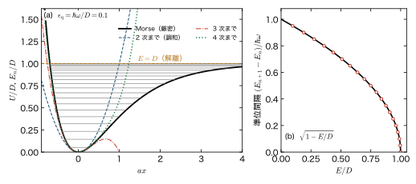
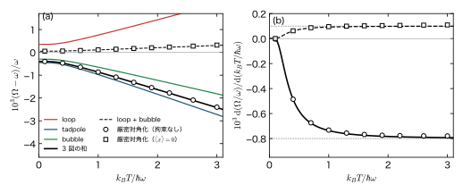
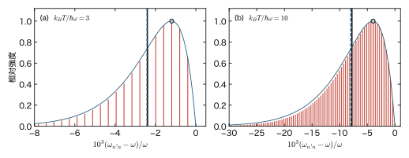

第14章フォノン間相互作用 — 非調和性と自己エネルギー
第2章から第3章，そして第7章・第13章と，本書は何度も調和振動子に戻ってきた．第13章の例題13.1では，調和振動子の応答関数 $\chi_{xx}$ から温度が完全に消えることを見た．準位が等間隔だから，どの準位から叩いても同じ振動数で返事をする．だから温度を上げても共鳴の位置は動かず，幅も出ない．
ところが実在の固体はそうではない．温めれば膨張し，Raman 散乱や中性子散乱で見るフォノンの振動数は温度とともにずれ，ピークには幅がある．これらはすべて，原子間ポテンシャルが2次式からずれていること，すなわち非調和性（anharmonicity）の結果である．非調和項があると，フォノンどうしが互いにエネルギーをやりとりする．これをフォノン間相互作用と呼ぶ．
本章の立場ははっきりしている．第IV部と第13章で電子間の Coulomb 相互作用に対して組み立てた道具——松原Green関数，Wick の定理，Feynman 図，Dyson 方程式，自己エネルギー——を，そのままフォノン間相互作用に使う．電子気体では厳密解が手に入らないので，図の計算が正しいかどうかを確かめるのは難しかった．ところが非調和振動子は，1自由度なら厳密に対角化できる．本章では，すべての図の答えを，素朴な摂動論・厳密な準位・厳密対角化と突き合わせながら進む．Feynman 図が「何を計算しているか」を，これほど手触りのある形で確かめられる場所は多くない．
- 調和近似では熱膨張・振動数の温度変化・線幅がどれも出ない理由
- 非調和振動子 $U(x)=\frac12m\omega^2x^2-\xi x^3+\varphi x^4$ と Morse ポテンシャル．Morse の厳密な準位と解離
- 生成・消滅演算子による1次・2次摂動．遷移振動数が $n+1$ に比例してずれ，熱平均で $2n_B+1$ が出ること
- 変位の応答関数（第3章・第7章）とフォノンの Green 関数（第13章）の関係．自己エネルギー $\Sigma$ と，第3章の減衰定数 $\gamma$ との対応 $\Gamma=-\Sigma''=\gamma/2m$
- Wick の定理による縮約の数え上げ（$5!!=15$，$7!!=105$，$9!!=945$）と，フォノンの Feynman 図の読み方
- loop・tadpole・bubble の3つの自己エネルギーを，松原和と解析接続を省略せずに導く
- 振動数の温度変化の符号を決める条件 $\varphi\gtrless\frac52\xi^2/m\omega^2$．Morse では loop $+\frac74$，tadpole $-\frac94$，bubble $-\frac32$（単位 $k_BT/D$）
- 3つの図の物理的な意味：loop は平均曲率，tadpole は熱膨張，bubble は倍音との準位反発
- 図の読み方の要点：フォノンの線に矢印がない理由，tadpole ではフォノンが別の波数に変わらないこと，寿命は「戻ってこない」過程だけから出ること
- 4次の2次（二重 loop と sunset），自己無撞着フォノン（SCPH）との関係，同じ次数の図どうしの打ち消し合い
- 3次の4次の図（$13!!=135135$ 通りの縮約のうち自己エネルギーに入る6種類）を，2次の図の部品（線と頂点）の着せ替えとして読む．頂点補正
- 線幅：単一の振動子では多重線，結晶では bubble（$\propto T$）と sunset（$\propto T^2$）
- 結晶への一般化と準調和近似（QHA）．QHA が拾うのは歪みを通る tadpole だけであること
- 電子系（Fetter–Walecka）とフォノン系の対応表
14.1 動機 —— 調和近似では何が出ないのか
14.1.1 調和近似の3つの欠落
固体中の原子は平衡位置のまわりで振動している．原子間ポテンシャルを平衡位置のまわりで Taylor 展開し，2次の項で止めたものが調和近似である．調和近似のもとでは，固体は独立な調和振動子（基準振動，フォノン）の集まりになる．これは格子振動の理論の出発点であり，比熱の Debye 模型も，中性子散乱で測るフォノン分散（第12章）も，この近似の上に立っている．
しかし調和近似には，はっきりした欠落が3つある．
調和近似で出ない3つのこと
- 熱膨張が出ない．ポテンシャルが $\frac12m\omega^2x^2$ なら $x\to-x$ について対称だから，どの温度でも平均位置は $\braket{x}=0$ である．温めても原子間距離は変わらない．
- 振動数が温度で変わらない．第13章の例題13.1で示したとおり，調和振動子の松原関数 $\mathcal{G}_{xx}(\ii\omega_n)=\hbar/m[(\ii\omega_n)^2-\omega^2]$ には温度が入らない（第13章の $\omega_0$ を本章では $\omega$ と書く）．準位が等間隔なので，$n\to n+1$ の遷移はどの $n$ でも同じ振動数 $\omega$ をもつ．
- 線幅が出ない．調和振動子のスペクトルは $\omega=\pm\omega_0$ のデルタ関数であり，幅がない．振動は永遠に減衰しない（第7章7.7節）．
実験はこの3つをすべて否定する．固体は温めると（ほとんどの場合）膨張し，Raman 散乱や中性子散乱で見るフォノンの振動数は温度とともに動き，ピークには有限の幅がある．熱伝導率が有限なのも，フォノンが互いに散乱して有限の寿命をもつからである．
3つの欠落はすべて同じ原因から来ている．ポテンシャルが2次式からずれていること，すなわち3次以上の項である．これらの項は，フォノンの言葉では「フォノンが2個に分かれる」「2個が1個にまとまる」「2個が散乱して2個になる」といった過程を表す．つまりフォノンどうしの相互作用である．
14.1.2 本章の立場 —— 電子間相互作用をフォノン間相互作用に置き換える
なぜ第IV部の道具がそのまま使えるのか
第IV部では，電子気体の Coulomb 相互作用を扱った．付録C ではそれを Feynman 図で整理し，自己エネルギー $\Sigma$ の実部がエネルギーのずれ（くりこみ），虚部が寿命を与えることを見た．第13章では，同じことを有限温度で行うための松原形式を作った．
フォノン間相互作用でやることは，まったく同じである．
- 自由な系：電子気体 $\to$ 調和振動子の集まり
- 相互作用：Coulomb 相互作用 $v(q)$ $\to$ 3次・4次の非調和項
- 知りたいもの：電子の準粒子エネルギーと寿命 $\to$ フォノンの繰り込まれた振動数 $\Omega$ と線幅 $\Gamma$
違いは2つしかない．フォノンは Bose 粒子なので松原振動数が Bose 型であること（第13章表13.1），そしてフォノンの数が保存されないので，奇数本の足をもつ頂点（3次の項）が現れることである．後者は，電子気体にはなかった新しい図（tadpole）を生み，それが熱膨張そのものであることが分かる（14.8節）．
本章のもう1つの利点は，答え合わせができることである．電子気体の自己エネルギーは厳密に計算できないので，2次の図が正しいかどうかを独立に確かめる手段がほとんどない．ところが1自由度の非調和振動子なら，(i) 量子力学の摂動論（14.3節），(ii) Morse ポテンシャルの厳密な準位（14.2節），(iii) 古典力学の振幅に依存する振動数，(iv) 数値的な厳密対角化（14.7節），という4つの独立な方法で図の答えを検算できる．以下では，図の答えが出るたびにこれらと突き合わせる．
14.1.3 本章の道筋
まず14.2節で模型を定め，14.3節で素朴な摂動論の答えを出しておく．これが「正解」になる．14.4節で応答関数とフォノンの Green 関数を本書の規約で定義し，自己エネルギー $\Sigma$ と第3章の $\gamma$ の関係を作る．14.5節と14.6節が本章の中心で，Wick の定理で縮約を数え，3つの最低次の図を松原和と解析接続まで含めて計算する．14.7節と14.8節でその結果を読み，14.9節と14.10節で次の次数と線幅に進む．14.11節で結晶に一般化し，第15章（有限温度のフォノン計算手法）への橋を架ける．最後に14.12節で，電子系との対応を表にまとめる．
14.2 模型 —— 非調和振動子と Morse ポテンシャル
14.2.1 1自由度の非調和振動子
質量 $m$ の粒子が，次のポテンシャルの中で1次元的に運動しているとする．
$\omega$ は調和振動数（$T=0$ で非調和項を捨てたときの振動数），$\xi$ と $\varphi$ はそれぞれ3次と4次の係数である．$\xi>0$ のとき，$-\xi x^3$ は $x>0$ 側でポテンシャルを下げるので，$x>0$ 側が柔らかい．原子間の結合なら，結合が伸びる側が柔らかいのが普通であり，$x$ を「結合長の伸び」と読めば $\xi>0$ が典型的な場合である．$\varphi>0$ なら両側の壁が急になる．
温度 $T$ で非調和項によって繰り込まれた振動数を $\Omega$ と書く．本章の目標は $\Omega$ とその温度依存性，そして線幅を求めることである．
第7章・付録C.9 と同じく，生成・消滅演算子で書く：
$\ell$ は零点振動の振幅の目安である（基底状態で $\braket{\hat x^2}=\ell^2$）．付録C.9 では $x_0$ と書いたが，本章では $x_0$ を平均位置に使いたいので $\ell$ と書く．ハミルトニアンを
$$ \begin{equation} \Ham = \Ham_0 + \hat U_3 + \hat U_4, \qquad \Ham_0 = \hbar\omega\left(\hat a^\dagger\hat a + \frac12\right), \qquad \hat U_3 = -\xi\ell^3\hat A^3, \qquad \hat U_4 = \varphi\ell^4\hat A^4 \label{eq:14-H0U3U4} \end{equation} $$と分ける．非調和性の強さは，次の無次元量で測るのが便利である．
$$ \begin{equation} g_3 \equiv \frac{\xi\ell^3}{\hbar\omega}, \qquad g_4 \equiv \frac{\varphi\ell^4}{\hbar\omega} \label{eq:14-g3g4} \end{equation} $$$g_3$ は「零点振幅 $\ell$ だけ変位したときの3次の項のエネルギー」を量子 $\hbar\omega$ で測ったもの，$g_4$ も同様である．摂動論は $g_3,g_4\ll1$ を前提とする．
記号についての注意
- Bose 分布．第13章と同じく $n_B$ と書く．とくに断らない限り $n_B\equiv n_B(\hbar\omega)=(\ee^{\beta\hbar\omega}-1)^{-1}$，$\beta=1/k_BT$ である．松原和で複素振動数 $z$ の関数として使うときは，13.7節と同じく $n_B(z)=(\ee^{\beta\hbar z}-1)^{-1}$（$z$ は振動数）と書く．
- 松原振動数．Bose 型の $\omega_n=2n\pi/\beta\hbar$ を使う（第13章の定義13.3）．$\omega_n$ の添字 $n$ は，14.3節の準位の番号 $n$ とは無関係である．$\omega_n$ と調和振動数 $\omega$ も別物である．混同の恐れがある所では「$n=0$ の松原振動数 $\omega_n=0$」のように書く．
- 虚時間．$\tau$ は第13章と同じく虚時間である．寿命には $\tau$ を使わない．
- 振動数の変数．応答関数の引数は複素振動数 $z$ で書き，実軸上では $z\to z+\ii0^+$ と読む．$\omega$ は調和振動数に予約してあるからである．
14.2.2 具体例：Morse ポテンシャル
係数 $\xi,\varphi$ の大きさの感覚をつかむために，2原子分子の結合のモデルとしてよく使われる Morse ポテンシャルを考える．
$$ \begin{equation} U_{\rm M}(x) = D\left(1-\ee^{-ax}\right)^2 \label{eq:14-morse} \end{equation} $$$D$ は井戸の深さ（解離エネルギー），$a$ は井戸の幅の逆数である（Morse の幅のパラメタ $a$ を，消滅演算子 $\hat a$ と区別するため，演算子にはハットを付ける）．$x\to\infty$ で $U_{\rm M}\to D$ となり，結合が切れる．
導出：Morse ポテンシャルを4次まで展開する
ステップ1：指数関数を展開する．$y\equiv ax$ と置くと
$$ \ee^{-y} = 1 - y + \frac{y^2}{2} - \frac{y^3}{6} + \frac{y^4}{24} - \cdots, \qquad 1-\ee^{-y} = y - \frac{y^2}{2} + \frac{y^3}{6} - \frac{y^4}{24} + \cdots $$ステップ2：2乗して次数ごとに集める．$(1-\ee^{-y})^2$ の各次数の係数を拾う．
- $y^2$：$y\cdot y$ だけで $1$．
- $y^3$：$y\cdot(-\frac{y^2}{2})$ が2回（順序の入れ替え）で $-1$．
- $y^4$：$(-\frac{y^2}{2})^2=\frac14$ と，$y\cdot\frac{y^3}{6}$ が2回で $\frac13$．合計 $\frac14+\frac13=\frac{7}{12}$．
ステップ3：式 \eqref{eq:14-H} と係数を比べる．
$$ \frac12m\omega^2 = Da^2, \qquad \xi = Da^3, \qquad \varphi = \frac{7}{12}Da^4 $$ステップ4：$a$，$D$，$\varphi$ を $m,\omega,\xi$ で書く．第2式を第1式で割ると $\xi/(\frac12m\omega^2)=a$．これを第1式に戻すと $D=m\omega^2/2a^2$．第3式は $\varphi=\frac{7}{12}\cdot\frac{(Da^3)^2}{Da^2}=\frac{7}{12}\cdot\frac{\xi^2}{Da^2}=\frac{7}{12}\cdot\frac{\xi^2}{m\omega^2/2}$．まとめて
∎ Morse では $\varphi$ が $\xi$ で決まってしまう．Morse は「3次と4次の比が $\varphi/(\xi^2/m\omega^2)=7/6$ に固定された」1パラメタの非調和振動子である．
Morse ポテンシャルの魅力は，Schrödinger 方程式が厳密に解けることである（Morse 1929）．厳密な準位は
である．調和振動子の準位から，$(n+\frac12)$ の2乗に比例する分だけ下がる．以下で使う2つの無次元量を定義しておく．
$$ \begin{equation} \epsilon_{\rm q} \equiv \frac{\hbar\omega}{D}\quad(\text{量子の目安}), \qquad \epsilon_T \equiv \frac{k_BT}{D}\quad(\text{熱の目安}) \label{eq:14-eps} \end{equation} $$$\epsilon_{\rm q}$ は「1量子が井戸の深さの何分の1か」，$\epsilon_T$ は「熱エネルギーが井戸の深さの何分の1か」である．式 \eqref{eq:14-morse-coef} と \eqref{eq:14-g3g4} から，$g_3^2=\xi^2\ell^6/(\hbar\omega)^2=\hbar\xi^2/8m^3\omega^5$，$\epsilon_{\rm q}=8\hbar\xi^2/m^3\omega^5$ なので
$$ \begin{equation} \epsilon_{\rm q} = 64\,g_3^2, \qquad g_4 = \frac73\,g_3^2\qquad(\text{Morse}) \label{eq:14-morse-g} \end{equation} $$となる（第2式は $\varphi=\frac76\xi^2/m\omega^2$ に $\ell^4/\hbar\omega$ を掛けて $g_3^2$ と比べればよい）．
導出：束縛準位の数と，準位間隔がゼロになるエネルギー
ステップ1：準位間隔．式 \eqref{eq:14-morse-levels} の差を取る．$u\equiv n+\frac12$ と書くと $E(u)=\hbar\omega u-(\hbar\omega u)^2/4D$ で，
$$ E_{n+1}-E_n = \hbar\omega - \frac{(\hbar\omega)^2}{4D}\left[(u+1)^2-u^2\right] = \hbar\omega - \frac{(\hbar\omega)^2}{4D}(2u+1) = \hbar\omega\left[1-\frac{\epsilon_{\rm q}}{2}(n+1)\right] $$準位間隔は $n$ とともに一定の割合で縮む．
ステップ2：$E$ の関数として書く．$E(u)$ は $u$ の2次関数（上に凸の放物線）で，頂点は $\dd E/\dd u=\hbar\omega-2(\hbar\omega)^2u/4D=0$，すなわち $\hbar\omega u=2D$ にある．頂点での値は $E=2D-(2D)^2/4D=D$，ちょうど解離エネルギーである．また $E=D[1-(1-\hbar\omega u/2D)^2]$ と平方完成できるので $1-\hbar\omega u/2D=\sqrt{1-E/D}$，したがって局所的な準位間隔は
$$ \frac{\dd E}{\dd u} = \hbar\omega\left(1-\frac{\hbar\omega u}{2D}\right) = \hbar\omega\sqrt{1-\frac{E}{D}} $$である．準位間隔は $E=D$ でゼロになる．
ステップ3：束縛準位の数．放物線 \eqref{eq:14-morse-levels} が意味をもつのは頂点の手前まで，すなわち
$$ n+\frac12 < \frac{2D}{\hbar\omega} = \frac{2}{\epsilon_{\rm q}} $$の準位だけである．それより上は解離した（束縛されない）状態である．∎

コラム：実在の分子で数値を入れる
Morse の言葉で書いた量が，実在の分子でどの程度の大きさかを見ておく．2原子分子の分光定数（NIST Chemistry WebBook に収録された調和振動数 $\omega_e$，回転定数 $B_e$，振動‐回転結合定数 $\alpha_e$，平衡核間距離 $r_e$）から，次の手順で $k=m\omega^2$ と $\xi$ が求まる（$m$ は換算質量 $\mu$）．
- 力の定数：$k=\mu\omega_e^2$（$\omega_e$ は角振動数に直したもの）．
- Dunham（1932）はポテンシャルを $\rho=(r-r_e)/r_e$ で $U=a_0\rho^2(1+a_1\rho+\cdots)$ と展開し，$a_1=-1-\alpha_e\omega_e/6B_e^2$ を示した（$\omega_e$ と $B_e$ は同じエネルギー単位）．
- $a_0\rho^2=\frac{k}{2}(r-r_e)^2$ だから，3次の項は $\frac{k}{2}(r-r_e)^2\cdot a_1\frac{r-r_e}{r_e}$．これを $-\xi(r-r_e)^3$ と比べて $\xi=-ka_1/2r_e$．
- $k$ と $\xi$ だけから決めた Morse の井戸の深さ：式 \eqref{eq:14-morse-coef} より $D_{\rm M}=m^3\omega^6/8\xi^2=k^3/8\xi^2$．
| 分子 | $k$ [N/m] | $\xi$ [J/m$^3$] | $\nu$ [THz] | $D_{\rm M}$ [eV] | 実際の $D_e$ [eV] | $2D_{\rm M}/\hbar\omega$ | 実際の束縛準位数 |
|---|---|---|---|---|---|---|---|
| H$_2$ | 575.1 | $6.23\times10^{12}$ | 131.9 | 3.82 | 4.75 | 14.0 | 15 |
| D$_2$ | 575.9 | $6.23\times10^{12}$ | 93.4 | 3.84 | 4.75 | 19.9 | 22 |
| Li$_2$ | 25.5 | $9.13\times10^{10}$ | 10.5 | 1.56 | 1.07 | 71.5 | （未確認） |
| N$_2$ | 2295 | $2.83\times10^{13}$ | 70.7 | 11.8 | 9.91 | 80.7 | （未確認） |
| O$_2$ | 1177 | $1.47\times10^{13}$ | 47.4 | 5.92 | 5.21 | 60.4 | （未確認） |
| F$_2$ | 470 | $6.11\times10^{12}$ | 27.5 | 2.17 | 1.66 | 38.2 | （未確認） |
注：Li$_2$〜F$_2$ の $D_e$ は，表に載っている $D_0$（零点準位からの解離エネルギー）に零点エネルギーを足した値である．O$_2$ の $B_e$ は $B_0+\alpha_e/2$ で求めた．表の $k$ と $\xi$ は有効数字3〜4桁に丸めてあるので，これらから $D_{\rm M}$ などを計算し直すと最後の桁が1%程度ずれることがある．
表から読み取れることは3つある．
- 同位体（H$_2$ と D$_2$）で $k$ と $\xi$ は同じである．ポテンシャルは電子が決めるので，原子核の質量によらない．質量が効くのは $\omega=\sqrt{k/\mu}$ を通してだけであり，したがって $\epsilon_{\rm q}=\hbar\omega/D$，すなわち束縛準位の数 $\sim2D/\hbar\omega$ だけが変わる．重い D$_2$ のほうが準位が密で，数が多い．
- $k$ と $\xi$ だけから決めた $D_{\rm M}$ は，実際の $D_e$ から数十%ずれる．実際のポテンシャルは Morse 型から外れているからである．谷の底の形（$k$，$\xi$）から井戸の深さを外挿するのは，それなりに粗い近似である．14.9節で，展開をどこで打ち切るかが高次の補正を大きく左右することを見るが，これはその伏線である．
- 展開そのものが成り立たない例もある．He 原子どうしの van der Waals 井戸では，調和近似の量子 $\hbar\omega/k_B\approx48$ K が井戸の深さ（約 11 K）を上回る．零点エネルギーだけで井戸からあふれるので，「平衡位置のまわりの小さな振動」という出発点そのものが成り立たない．
典型的な分子では $\epsilon_{\rm q}=\hbar\omega/D$ は $0.03$〜$0.14$ 程度であり，式 \eqref{eq:14-morse-g} より $g_3^2=\epsilon_{\rm q}/64$ は $10^{-3}$ 程度である．摂動の展開パラメタは確かに小さい．
14.3 素朴な摂動論 —— 生成・消滅演算子で準位を計算する
Feynman 図に入る前に，量子力学の教科書どおりの Rayleigh–Schrödinger 摂動論で準位を計算しておく．付録C.9 で $\lambda\hat x^N$ について一般的に行った計算を，$\hat U_3+\hat U_4$ に当てはめるだけである．ここで得る遷移振動数が，以後のすべての検算の基準になる．
14.3.1 必要な行列要素
付録C.9 の「経路を数える」方法（導出C.6，C.7）で求めた行列要素のうち，本章で使うものを表14.2にまとめる．$\hat A=\hat a+\hat a^\dagger$ は準位を $\pm1$ しか動かさないので，$\hat A^3$ は $\Delta n=\pm1,\pm3$，$\hat A^4$ は $\Delta n=0,\pm2,\pm4$ だけを結ぶ．
| $N$ | $n'$ | $\bra{n'}\hat A^N\ket{n}$ |
|---|---|---|
| 3 | $n+3$ | $\sqrt{(n+1)(n+2)(n+3)}$ |
| $n+1$ | $3(n+1)\sqrt{n+1}$ | |
| $n-1$ | $3n\sqrt{n}$ | |
| $n-3$ | $\sqrt{n(n-1)(n-2)}$ | |
| 4 | $n+4$ | $\sqrt{(n+1)(n+2)(n+3)(n+4)}$ |
| $n+2$ | $(4n+6)\sqrt{(n+1)(n+2)}$ | |
| $n$ | $6n^2+6n+3$ | |
| $n-2$ | $(4n-2)\sqrt{n(n-1)}$ | |
| $n-4$ | $\sqrt{n(n-1)(n-2)(n-3)}$ |
よくある間違い：同じ行列要素への寄与は，足してから2乗する
$\bra{n+1}\hat A^3\ket{n}$ には3本の経路（$++-$，$+-+$，$-++$）が寄与し，それぞれ $(n+2)\sqrt{n+1}$，$(n+1)\sqrt{n+1}$，$n\sqrt{n+1}$ を与える（付録C 導出C.7）．2次摂動で必要なのは行列要素の絶対値の2乗だから，
$$ \abs{\bra{n+1}\hat A^3\ket{n}}^2 = \Big[(n+2)+(n+1)+n\Big]^2(n+1) = 9(n+1)^3 \qquad(\text{正しい}) $$である．各経路の寄与を別々に2乗して足すと
$$ \Big[(n+2)^2+(n+1)^2+n^2\Big](n+1) = (3n^2+6n+5)(n+1) \qquad(\text{誤り}) $$となり，$n=0$ で $5$ 対 $9$ とまったく違う．経路は量子力学的な振幅であって確率ではないから，同じ始状態と終状態を結ぶ振幅は先に足し合わせ（干渉させ）てから2乗しなければならない．この取り違えは，Feynman 図の言葉では「同じ図を何通りの縮約が作るか」を数え間違えることに当たる（14.5節）．
14.3.2 1次摂動
1次のエネルギーは対角要素で決まる．$\hat A^3$ の対角要素はパリティのためにゼロ（$\hat A^3$ は $n$ の偶奇を必ず変える）なので，3次の項は1次では効かない．4次の項は
$$ \begin{equation} E_n^{(1)} = \varphi\ell^4\bra{n}\hat A^4\ket{n} = \varphi\ell^4\left(6n^2+6n+3\right) \label{eq:14-E1} \end{equation} $$14.3.3 2次摂動
2次のエネルギーは $E_n^{(2)}=\sum_{n'\neq n}\abs{\bra{n'}\hat U\ket{n}}^2/(E_n^{(0)}-E_{n'}^{(0)})$ である．$\hat U=\hat U_3+\hat U_4$ を入れると，$\abs{\cdots}^2$ の中に3つの組み合わせが出る．
- $\hat U_3$ どうし：$\xi^2$ の項．
- $\hat U_4$ どうし：$\varphi^2$ の項．
- 交差項 $\bra{n}\hat U_3\ket{n'}\bra{n'}\hat U_4\ket{n}$：$\hat U_3$ は $n'-n$ を奇数，$\hat U_4$ は偶数にしか結ばないので，同じ $n'$ で両方がゼロでないことはない．交差項は消える．
したがって2つを別々に計算すればよい．分母は $E_n^{(0)}-E_{n+k}^{(0)}=-k\hbar\omega$ である．
導出：$\xi^2$ と $\varphi^2$ の2次摂動
(1) $\hat U_3$ の2次．表14.2の4つの要素を2乗して $-k$ で割る（付録C 導出C.8 と同じ計算である）：
$$ \sum_{k}\frac{\abs{\bra{n+k}\hat A^3\ket{n}}^2}{-k} = \frac{9(n+1)^3}{-1} + \frac{9n^3}{+1} + \frac{(n+1)(n+2)(n+3)}{-3} + \frac{n(n-1)(n-2)}{+3} $$$n^3-(n+1)^3=-(3n^2+3n+1)$，$n(n-1)(n-2)-(n+1)(n+2)(n+3)=-(9n^2+9n+6)$ を使うと，和は $-9(3n^2+3n+1)-(3n^2+3n+2)=-(30n^2+30n+11)$．よって
(2) $\hat U_4$ の2次．$k=\pm2$ と $k=\pm4$ の4項である．
$$ \frac{(4n+6)^2(n+1)(n+2)}{-2} + \frac{(4n-2)^2n(n-1)}{+2} = -(8n^4+48n^3+106n^2+102n+36) + (8n^4-16n^3+10n^2-2n) = -(64n^3+96n^2+104n+36) $$ $$ \frac{(n+1)(n+2)(n+3)(n+4)}{-4} + \frac{n(n-1)(n-2)(n-3)}{+4} = -(4n^3+6n^2+14n+6) $$（4次の項 $\pm8n^4$，$\pm n^4/4$ はそれぞれ打ち消し合う．）足して
∎ $n=0$ で $-42\varphi^2\ell^8/\hbar\omega$．付録C 表C.9 の $S_4(0)=-42$ と一致する．
14.3.4 遷移振動数
分光で見えるのは準位そのものではなく，隣り合う準位の差 $\omega_{n+1,n}\equiv(E_{n+1}-E_n)/\hbar$ である．$\xi^2$ と $\varphi$ の最低次まで取ると：
導出：$\omega_{n+1,n}$
4次の1次．式 \eqref{eq:14-E1} の差：$6(n+1)^2+6(n+1)+3-(6n^2+6n+3)=12n+12=12(n+1)$．よって $\Delta E=12\varphi\ell^4(n+1)=12g_4\hbar\omega(n+1)$．
3次の2次．式 \eqref{eq:14-E2-xi} の差：$30[(n+1)^2-n^2]+30[(n+1)-n]=30(2n+1)+30=60(n+1)$．よって $\Delta E=-60(\xi^2\ell^6/\hbar\omega)(n+1)=-60g_3^2\hbar\omega(n+1)$．
まとめる．
最後の等号は $12g_4\omega=12\varphi\ell^4/\hbar=12\varphi\hbar/4m^2\omega^2=3\hbar\varphi/m^2\omega^2$，$60g_3^2\omega=60\xi^2\ell^6/\hbar^2\omega=\frac{15}{2}\hbar\xi^2/m^3\omega^4=\frac{3\hbar}{m^2\omega^2}\cdot\frac52\frac{\xi^2}{m\omega^2}$ から．∎
2つのことが分かる．第一に，遷移振動数は準位の番号 $n$ に比例してずれる．励起された（振幅の大きい）振動ほど，非調和性を強く感じる．第二に，ずれの符号は$\varphi$ と $\frac52\xi^2/m\omega^2$ の大小で決まる．$\varphi>0$（壁が急）だけでは振動数が上がるとは限らない．3次の項は2次摂動として必ず振動数を下げる側に効き，その係数 $\frac52$ が勝負を決める．この $\frac52$ の内訳（$\frac32+1$）が，14.6節で tadpole と bubble に分かれる．
14.3.5 熱平均で $2n_B+1$ が出る
温度 $T$ では，どの準位にどれだけ分布しているかで平均を取る必要がある．準位 $n$ の占有確率を $p_n$ と書く．調和振動子の最低次では $p_n=(1-q)q^n$，$q\equiv\ee^{-\beta\hbar\omega}$ である．
導出：強度で重み付けした $n+1$ の平均
ステップ1：線の強度．第8章の Lehmann 表示によれば，$n\to n+1$ の線の強度は $(p_n-p_{n+1})\abs{x_{n+1,n}}^2$ に比例する．最低次では $\abs{x_{n+1,n}}^2=\ell^2(n+1)$，$p_{n+1}=qp_n$ だから，強度は $W_n\propto p_n(n+1)$ である．
ステップ2：幾何分布の平均．$p_n=(1-q)q^n$ について，$\braket{n}=q/(1-q)=n_B$（Bose 分布そのもの），$\braket{n^2}=2n_B^2+n_B$ である（$\sum_n n^2q^n$ を $q\,\dd/\dd q$ を2回作用させて計算すればよい）．
ステップ3：重み付き平均．
$$ \braket{n+1}_W = \frac{\sum_np_n(n+1)^2}{\sum_np_n(n+1)} = \frac{\braket{n^2}+2\braket{n}+1}{\braket{n}+1} = \frac{2n_B^2+3n_B+1}{n_B+1} = \frac{(2n_B+1)(n_B+1)}{n_B+1} = 2n_B+1 $$∎
したがって，強度で重み付けした遷移振動数の平均（スペクトルの重心）は
$$ \begin{equation} \Omega - \omega = s_1\,(2n_B+1) = \frac{3\hbar}{m^2\omega^2}\left(2n_B+1\right)\left[\varphi-\frac52\frac{\xi^2}{m\omega^2}\right] \label{eq:14-centroid-RS} \end{equation} $$となる．$2n_B+1=\coth(\beta\hbar\omega/2)$ は $T=0$ で $1$（零点振動による繰り込み），高温で $2k_BT/\hbar\omega$ に近づく．この式が本章の「正解」である．14.6節で Feynman 図の和がこれに一致することを示す．なお，スペクトルは1本の線ではなく，$n$ ごとに少しずつずれた線の束（多重線）になっている．その意味は14.10節で詳しく見る．
14.3.6 Morse の厳密な準位との照合
式 \eqref{eq:14-transition} を Morse の係数で評価する．式 \eqref{eq:14-morse-g} より $g_4=\frac73g_3^2$ なので
$$ s_1 = \left(12\cdot\frac73-60\right)g_3^2\,\omega = (28-60)\,g_3^2\,\omega = -32\,g_3^2\,\omega = -\frac{\epsilon_{\rm q}}{2}\,\omega $$（最後に $g_3^2=\epsilon_{\rm q}/64$ を使った）．すなわち4次の1次が $+\frac{7}{16}\epsilon_{\rm q}\omega(n+1)$，3次の2次が $-\frac{15}{16}\epsilon_{\rm q}\omega(n+1)$ で，合計 $\omega_{n+1,n}=\omega[1-\frac{\epsilon_{\rm q}}{2}(n+1)]$．一方，厳密な準位 \eqref{eq:14-morse-levels} からは，14.2.2節の導出のステップ1で $E_{n+1}-E_n=\hbar\omega[1-\frac{\epsilon_{\rm q}}{2}(n+1)]$ を得ていた．完全に一致する．Morse では準位が厳密に $n$ の2次式なので，この一致は「たまたま最低次で合った」のではなく，最低次の摂動論が遷移振動数を正しく与えていることを意味する．
古典力学での検算
同じ括弧 $[\varphi-\frac52\xi^2/m\omega^2]$ は古典力学でも出る．Landau–Lifshitz『力学』§28 は，運動方程式 $\ddot x+\omega^2x=-\alpha x^2-\beta' x^3$ の振幅 $b$ の振動の振動数が $[3\beta'/8\omega-5\alpha^2/12\omega^3]b^2$ だけずれることを示している．式 \eqref{eq:14-H} では $\ddot x=-U'(x)/m=-\omega^2x+3\xi x^2/m-4\varphi x^3/m$ なので $\alpha=-3\xi/m$，$\beta'=4\varphi/m$ であり，代入すると
$$ \Delta\omega_{\rm 古典} = \frac{3b^2}{2m\omega}\left[\varphi-\frac52\frac{\xi^2}{m\omega^2}\right] $$となる．エネルギー $E=\frac12m\omega^2b^2$ の軌道を量子の準位 $E\approx\hbar\omega(n+1)$（遷移の上と下の平均）と対応させる $b^2\leftrightarrow2\hbar(n+1)/m\omega$ を入れれば，式 \eqref{eq:14-transition} に一致する．$\frac52$ は量子効果ではなく，古典的な非線形振動の性質である．
14.4 変位の応答関数とフォノンの Green 関数
14.3節の摂動論は準位を1つずつ計算する方法だった．結晶のように自由度が $10^{23}$ 個あると，この方法は使えない．代わりに，応答関数そのものを摂動展開する．そのための舞台を，本書の規約で整える．
14.4.1 第3章・第7章・第13章のおさらい
第3章（古典，力の流儀）．減衰振動子 $m\ddot x+\gamma\dot x+m\omega^2x=F$ に外力 $F\ee^{-\ii zt}$ を加えたときの応答は，本章の記号（固有振動数 $\omega$，外力の振動数 $z$）で
$$ \begin{equation} \chi_{\text{力学}}(z) = \frac{1}{m(\omega^2-z^2)-\ii\gamma z} \label{eq:14-chi-ch3} \end{equation} $$であった（第3章の複素感受率の式で $\omega_0\to\omega$，$\omega\to z$ と書き換えたもの）．共鳴の近くでは $\chi''_{\text{力学}}$ は半値半幅 $\Gamma=\gamma/2m$ の Lorentz 型になる（第3章3.3節）．
第7章（量子，$\Ham_{\text{ext}}=+f\hat B$ の流儀）．久保公式は $\chi^R_{AB}(t)=-\frac{\ii}{\hbar}\theta(t)\braket{[\hat A_H(t),\hat B]}$ であり，Fourier 変換は $g(z)=\int\dd t\,\ee^{\ii zt}g(t)$ である．調和振動子では
$$ \begin{equation} \chi^R_{xx}(z) = \frac{1}{m\left(z^2-\omega^2\right)} \qquad(z\to z+\ii0^+) \label{eq:14-chiR-harm} \end{equation} $$となる．第13章13.8.5節で注意したとおり，$\chi^R_{xx}=-\chi_{\text{力学}}$ である．本書の $f$ は力ではなく「力にマイナスを付けたもの」なので，観測量 $\delta\braket{\hat x}$ は両方の流儀で一致する．本章では，計算は本書の流儀（$\chi^R_{xx}$）で行い，第3章と比べるときだけ $\chi_{\text{力学}}=-\chi^R_{xx}$ に直す．
第13章（虚時間）．松原関数 $\mathcal{G}_{xx}(\tau)=-\braket{T_\tau\hat x(\tau)\hat x(0)}$ と $\chi_{xx}(\ii\omega_n)=\mathcal{G}_{xx}(\ii\omega_n)/\hbar$ を計算し，$\ii\omega_n\to z+\ii0^+$ と解析接続すれば $\chi^R_{xx}(z)$ が得られる．調和振動子では例題13.1の $\mathcal{G}_{xx}(\ii\omega_n)=\hbar/m[(\ii\omega_n)^2-\omega^2]$ がそれであった．
14.4.2 フォノンの Green 関数
$\hat x$ のままでは $\ell$ の因子がうるさいので，無次元の $\hat A=\hat x/\ell$ で Green 関数を定義する．多体理論の慣習で，フォノンの伝播関数には $D$ の文字を使う．
定義14.1 フォノンの Green 関数
遅延 Green 関数と松原 Green 関数を
で定義する．$\Delta\hat A\equiv\hat A-\braket{\hat A}$ はゆらぎである．Fourier 変換の規約は第7章（$\ee^{\ii zt}$）と第13章（$\mathcal{D}(\ii\omega_n)=\int_0^{\beta\hbar}\dd\tau\,\ee^{\ii\omega_n\tau}\mathcal{D}(\tau)$）のとおりとする．
定義 \eqref{eq:14-D-def} を久保公式と見比べると $D^R(t)=\hbar\chi^R_{AA}(t)$ であり，$\hat x=\ell\hat A$ だから
である．$\mathcal{D}$ は第13章の定義13.1で $\hat A=\hat B=\Delta\hat A$ と置いたものにほかならず，Bose 型（$\zeta=+1$）である．
なぜゆらぎ $\Delta\hat A$ で定義するのか
3次の項 $-\xi x^3$ があると，平均位置が $\braket{\hat A}\neq0$ にずれる（これが熱膨張である．14.6.2節）．$\braket{T_\tau\hat A(\tau)\hat A(0)}$ には定数 $\braket{\hat A}^2$ が混ざり，$\mathcal{D}(\ii\omega_n)$ の $\omega_n=0$ 成分に $\beta\hbar\braket{\hat A}^2$ という余計な項が付いてしまう．遅延関数のほうは交換子で定義されているので，$\hat A$ を定数だけずらしても変わらない（$[\hat A+c,\hat A+c]$ の $c$ は交換子から落ちる）．したがって，ゆらぎで定義した $\mathcal{D}$ を解析接続したものが $D^R$ である．調和振動子では $\braket{\hat A}_0=0$ なので区別は要らない．
導出：調和振動子の $D^R_0$ と $\mathcal{D}_0$
ステップ1：$D^R_0(t)$．$\hat a_H(t)=\hat a\ee^{-\ii\omega t}$ だから $\hat A_H(t)=\hat a\ee^{-\ii\omega t}+\hat a^\dagger\ee^{\ii\omega t}$．$[\hat a,\hat a^\dagger]=1$ を使うと
$$ \left[\hat A_H(t),\hat A\right] = \ee^{-\ii\omega t}[\hat a,\hat a^\dagger] + \ee^{\ii\omega t}[\hat a^\dagger,\hat a] = \ee^{-\ii\omega t}-\ee^{\ii\omega t} = -2\ii\sin\omega t $$よって $D^R_0(t)=-\ii\theta(t)(-2\ii\sin\omega t)=-2\theta(t)\sin\omega t$．
ステップ2：Fourier 変換．$\mathrm{Im}\,z>0$ で $\int_0^\infty\dd t\,\ee^{\ii zt}\sin\omega t=\omega/(\omega^2-z^2)$（第2章・第3章で何度も行った計算）だから
$$ D^R_0(z) = \frac{-2\omega}{\omega^2-z^2} = \frac{2\omega}{z^2-\omega^2} $$式 \eqref{eq:14-chi-D} で $\chi^R_{xx}$ に戻すと $\frac{\ell^2}{\hbar}\cdot\frac{2\omega}{z^2-\omega^2}=\frac{1}{2m\omega}\cdot\frac{2\omega}{z^2-\omega^2}=\frac{1}{m(z^2-\omega^2)}$．式 \eqref{eq:14-chiR-harm} に一致する．
ステップ3：$\mathcal{D}_0(\tau)$．例題13.1 とまったく同じ計算で，$\abs{\tau}<\beta\hbar$ に対して
$$ \mathcal{D}_0(\tau) = -\left[(n_B+1)\,\ee^{-\omega\abs{\tau}} + n_B\,\ee^{\omega\abs{\tau}}\right] $$（$\tau>0$ では $\braket{\hat a\hat a^\dagger}=n_B+1$ が $\ee^{-\omega\tau}$ に，$\braket{\hat a^\dagger\hat a}=n_B$ が $\ee^{\omega\tau}$ に付く．$\tau<0$ は $T_\tau$ で順序が入れ替わり，$\abs{\tau}$ の式になる．）
ステップ4：$\mathcal{D}_0(\ii\omega_n)$．例題13.1 の結果 $\mathcal{G}_{xx}(\ii\omega_n)=\hbar/m[(\ii\omega_n)^2-\omega^2]$ を $\ell^2=\hbar/2m\omega$ で割れば
∎ $\ii\omega_n\to z$ と置けば $D^R_0(z)$ になる．
以下で繰り返し使う2つの特別な値を出しておく．
第1式は $\mathcal{D}_0(\tau)$ に $\tau=0$ を入れただけである（$\braket{\hat A^2}_0=\braket{\hat a\hat a^\dagger+\hat a^\dagger\hat a}_0=2n_B+1$ とも一致する）．第2式は \eqref{eq:14-D0} で $\omega_n=0$ と置いたもので，$\tau$ で直接積分しても $-(n_B+1)(1-\ee^{-\beta\hbar\omega})/\omega-n_B(\ee^{\beta\hbar\omega}-1)/\omega=-1/\omega-1/\omega$ となって確かめられる（$(n_B+1)\ee^{-\beta\hbar\omega}=n_B$ を使う）．第1式は「等時刻のゆらぎ」，第2式は「静的な応答」であり，それぞれ loop と tadpole の部品になる．
14.4.3 自己エネルギーと Dyson 方程式
非調和項があるときの $\mathcal{D}$ を，付録C.6 の Dyson 方程式の形に整理する．
定義14.2 フォノンの自己エネルギー
自己エネルギー $\Sigma$ を Dyson 方程式
$$ \mathcal{D} = \mathcal{D}_0 + \mathcal{D}_0\,\Sigma\,\mathcal{D} $$で定義する（松原振動数の表示では積，虚時間の表示では $[0,\beta\hbar]$ 上の畳み込み）．$\Sigma$ は1本の $\mathcal{D}_0$ を切っても2つに分かれない（既約な）図の和である（付録C.6 の固有自己エネルギーに当たる）．
両辺を $\mathcal{D}_0\mathcal{D}$ で割れば $\mathcal{D}^{-1}=\mathcal{D}_0^{-1}-\Sigma$ だから，式 \eqref{eq:14-D0} より
$$ \mathcal{D}(\ii\omega_n) = \frac{1}{\dfrac{(\ii\omega_n)^2-\omega^2}{2\omega}-\Sigma(\ii\omega_n)} = \frac{2\omega}{(\ii\omega_n)^2-\omega^2-2\omega\Sigma(\ii\omega_n)} $$となる．解析接続して，式 \eqref{eq:14-chi-D} と $\chi_{\text{力学}}=-\chi^R_{xx}$ を使えば：
$\Sigma$ は振動数の次元をもつ（$\hbar\Sigma$ がエネルギー）．第13章13.10.2節の電子の Dyson 方程式では $\Sigma$ をエネルギーの次元で書いたので，$\Sigma/\hbar$ が現れていた．本章のフォノンの $\Sigma$ はその $\Sigma/\hbar$ に相当する．
導出：$\Sigma$ から振動数と線幅を読む —— 第3章の $\gamma$ との対応
ステップ1：実部と虚部に分ける．実軸のすぐ上で $\Sigma(z)=\Sigma'(z)+\ii\Sigma''(z)$ と書く．
ステップ2：極の位置．$\chi_{\text{力学}}$ の分母の実部がゼロになる条件は
である．$\Sigma$ が小さければ $\Omega^2-\omega^2=(\Omega-\omega)(\Omega+\omega)\simeq2\omega(\Omega-\omega)$ だから，最低次で
$$ \Omega \simeq \omega + \Sigma'(\omega) $$ステップ3：極の近くで展開する．$z\simeq\Omega$ で $\omega^2+2\omega\Sigma'-z^2\simeq\Omega^2-z^2\simeq2\Omega(\Omega-z)$，$2\omega\Sigma''\simeq2\Omega\Sigma''$ だから
$$ m\left[\omega^2+2\omega\Sigma(z)-z^2\right] \simeq 2m\Omega\left(\Omega-z+\ii\Sigma''\right) = 2m\Omega\left(\Omega-z-\ii\Gamma\right), \qquad \Gamma \equiv -\Sigma''(\Omega) $$ステップ4：第3章と比べる．式 \eqref{eq:14-chi-ch3} の分母を $z\simeq\omega$ で同じように展開すると $m(\omega^2-z^2)-\ii\gamma z\simeq2m\omega(\omega-z)-\ii\gamma\omega=2m\omega(\omega-z-\ii\gamma/2m)$．2つを見比べて
ステップ5：スペクトル．したがって $\chi''_{\text{力学}}(z)\simeq\frac{1}{2m\Omega}\frac{\Gamma}{(z-\Omega)^2+\Gamma^2}$ となり，第3章3.3節の近似形（Lorentz 型）とまったく同じ形になる．∎
| 第3章（現象論） | 本章（微視的） | |
|---|---|---|
| 応答関数 | $\left[m(\omega_0^2-z^2)-\ii\gamma z\right]^{-1}$ | $\left[m(\omega^2+2\omega\Sigma(z)-z^2)\right]^{-1}$ |
| 共鳴振動数 | $\omega_0$（与えられた定数） | $\Omega^2=\omega^2+2\omega\Sigma'(\Omega)$（温度に依存） |
| 半値半幅 | $\Gamma=\gamma/2m$（与えられた定数） | $\Gamma=-\Sigma''(\Omega)$（温度に依存） |
| 減衰の出どころ | 摩擦力 $-\gamma\dot x$ を手で入れる | 他のフォノンへのエネルギーの受け渡し |
符号と因子2の流儀
- 自己エネルギーの符号は文献によって違う．本書は $\Omega-\omega=+\Sigma'$，$\Gamma=-\Sigma''$ の流儀である．$\Sigma$ の前にマイナスを付けて定義する文献では，$\Gamma=+\Sigma''$ になる．
- $\Gamma$ は半値半幅である．全幅（FWHM）は $2\Gamma$．振幅は $\ee^{-\Gamma t}$，エネルギー（振幅の2乗）は $\ee^{-2\Gamma t}$ で減衰するので，フォノンの寿命は $\tau_{\rm ph}=1/2\Gamma$ と書かれることが多い（第13章13.10.2節の「寿命の流儀」の注意と同じ事情である）．本章の $\tau$ は虚時間なので，寿命には必ず添字を付ける．
こうして問題は$\Sigma(z)$ を計算することに帰着した．$\Sigma'$ が振動数のずれ，$\Sigma''$ が線幅を与える．第3章では $\gamma$ を「摩擦」として手で入れたが，本章ではそれを非調和項から計算する．
14.5 摂動展開とファインマン図 —— 縮約を数える
14.5.1 展開の式
第13章13.1.2節の展開式（虚時間の Dyson 級数）により，統計重みは $\ee^{-\beta\Ham}=\ee^{-\beta\Ham_0}T_\tau\exp[-\frac1\hbar\int_0^{\beta\hbar}\dd\tau'\,\hat V(\tau')]$ と展開できる．いまの場合 $\hat V=\hat U_3+\hat U_4$ である．これを $\mathcal{D}(\tau)$ の定義に入れ，分母の分配関数と打ち消し合う真空図（付録C.4.1）を除くと
となる．$\braket{\cdots}_0$ は $\Ham_0$ での熱平均，添字 c は「真空図を含まない（連結な）縮約だけを取る」ことを表し，演算子の虚時間依存は $\Ham_0$ による（相互作用表示）．最後の $\braket{\hat A}^2$ は，定義 \eqref{eq:14-D-def} が $\Delta\hat A$ で書かれていることから来る：$-\braket{T_\tau\Delta\hat A\Delta\hat A}=-\braket{T_\tau\hat A\hat A}+\braket{\hat A}^2$．
熱平均は熱的 Wick の定理（第13章13.10.1節）で縮約の積に分解する．縮約の値は
$$ \begin{equation} \braket{T_\tau\hat A(\tau_1)\hat A(\tau_2)}_0 = -\mathcal{D}_0(\tau_1-\tau_2), \qquad \braket{\hat A(\tau_1)\hat A(\tau_1)}_0 = 2n_B+1 \label{eq:14-contraction} \end{equation} $$である．第2式は同じ時刻の演算子どうしの縮約（等時刻の縮約）で，式 \eqref{eq:14-D0-special} の第1式と同じものである．
付録C.9 との関係
付録C.9 では，$\hat A^N$ を正規順序に並べ替える Wick の展開（C.9.3節）で $\bra{0}\hat A^N\ket{0}=(N-1)!!$ を得た．「$N$ 個の $\hat A$ を2個ずつ組にする仕方の数」である．本節でも同じ数え上げを行うが，違いは各組が数 $1$ ではなく時間（虚時間）の関数 $-\mathcal{D}_0(\tau_i-\tau_j)$ を与えることである．C.9 の計算は，本節の計算で全部の時刻を同じにした特別な場合に当たる．
14.5.2 4次の1次：loop
$\varphi$ の1次の項は，式 \eqref{eq:14-expansion} の指数関数を1次まで展開して
$$ \mathcal{D}^{(1)}(\tau) = -\braket{T_\tau\hat A(\tau)\hat A(0)\left(-\frac1\hbar\right)\!\int_0^{\beta\hbar}\!\dd\tau_1\,\varphi\ell^4\hat A^4(\tau_1)}_{0,{\rm c}} = \frac{\varphi\ell^4}{\hbar}\int_0^{\beta\hbar}\!\dd\tau_1\braket{T_\tau\hat A(\tau)\hat A(0)\hat A^4(\tau_1)}_{0,{\rm c}} $$である．6個の $\hat A$ を組にする仕方は $5!!=15$ 通りある．
導出：15通りの縮約の分類と loop の重み 12
(i) 外の2本が直接つながる（3通り）．$\hat A(\tau)$ と $\hat A(0)$ を組にし，残る $\tau_1$ の4個を組にする（$3!!=3$ 通り）．$\tau_1$ の部分は外とつながらない真空図であり，添字 c で除かれる．
(ii) 外の2本が頂点につながる（12通り）．$\hat A(\tau)$ は $\tau_1$ の4個のどれと組んでもよい（4通り），$\hat A(0)$ は残る3個のどれと組んでもよい（3通り）．残る2個は同じ時刻 $\tau_1$ どうしで組になる（1通り）．$4\times3=12$ 通り．
合計 $3+12=15$．各縮約の値は，(ii) では $(-\mathcal{D}_0(\tau-\tau_1))\times(-\mathcal{D}_0(\tau_1))\times(2n_B+1)$ である．2つのマイナスは打ち消し合う．よって
$$ \mathcal{D}^{(1)}(\tau) = \frac{12\varphi\ell^4}{\hbar}\left(2n_B+1\right)\int_0^{\beta\hbar}\!\dd\tau_1\,\mathcal{D}_0(\tau-\tau_1)\,\mathcal{D}_0(\tau_1) $$∎ 外の線が頂点に入り，頂点から出ていき，頂点には自分自身に戻る輪（等時刻の縮約）が付いている．この形から loop と呼ぶ．
14.5.3 3次の1次はゼロ，3次の2次は105通り
$\xi$ の1次では $\braket{T_\tau\hat A\hat A\hat A^3}_0$ と5個（奇数個）の演算子の平均になり，奇数個は組にできないのでゼロである．$\xi$ の2次は，指数関数の2次の項 $\frac{1}{2!}(-\frac1\hbar)^2\int\!\!\int\hat U_3\hat U_3$ から
$$ \begin{equation} \mathcal{D}^{(2)}(\tau) = -\frac{\xi^2\ell^6}{2\hbar^2}\int_0^{\beta\hbar}\!\!\dd\tau_1\int_0^{\beta\hbar}\!\!\dd\tau_2\, \braket{T_\tau\hat A(\tau)\hat A(0)\hat A^3(\tau_1)\hat A^3(\tau_2)}_{0,{\rm c}} \label{eq:14-D2-xi} \end{equation} $$である（$\hat U_3\hat U_3=(-\xi\ell^3)^2\hat A^3\hat A^3$ なので $\xi$ の符号は消える）．8個の $\hat A$ を組にする仕方は $7!!=105$ 通りある．
導出：105通りの縮約の分類
外の2本 $\hat A(\tau)$，$\hat A(0)$ の行き先で場合を分ける．
(i) 外どうしが直接つながる：15通り．残る6個（$\tau_1$ の3個，$\tau_2$ の3個）の組み方は $5!!=15$ 通りで，すべて真空図である．c で除かれる．
(ii) 外の2本が同じ頂点につながる：36通り．どちらの頂点か（2通り），その頂点の3個のうち $\hat A(\tau)$ の相手（3通り），$\hat A(0)$ の相手（残り2個から2通り）．その頂点に残る1個は，もう一方の頂点の3個のどれかと組む（3通り）．もう一方の頂点に残る2個は等時刻で組む（1通り）．$2\times3\times2\times3\times1=36$．これが tadpole である．
(iii) 外の2本が異なる頂点につながる：54通り．$\hat A(\tau)$ がどちらの頂点に行くか（2通り），相手（3通り），$\hat A(0)$ のもう一方の頂点での相手（3通り）．各頂点に2個ずつ残る．その4個の組み方は $3!!=3$ 通りで，さらに2種類に分かれる．
- 頂点をまたいで2本とも結ぶ（2通り）：$2\times3\times3\times2=36$ 通り．これが bubble である．
- 各頂点の中で等時刻に組む（1通り）：$2\times3\times3\times1=18$ 通り．外の2本はそれぞれ別の「頂点＋輪」につながるが，2本の外線どうしはつながっていない．
合計．$15+36+54=15+36+36+18=105$．∎
最後の18通りの図は，外の線から見ると「$\tau$ の側に $\hat A$ の平均値が1つ，$0$ の側にもう1つ」という形をしている．計算すると $\tau$ によらない定数で，その値はちょうど $-\braket{\hat A}^2$（$\braket{\hat A}$ の最低次は14.6.2節の式 \eqref{eq:14-A-mean}）である．これは式 \eqref{eq:14-expansion} の最後の $+\braket{\hat A}^2$ と正確に打ち消し合う．ゆらぎ $\Delta\hat A$ で定義した理由が，ここで帳尻として現れる．したがって $\Sigma$ に入るのは tadpole（36通り）と bubble（36通り）である．
14.5.4 図の辞書
付録C では，実線が電子の伝播関数 $G^0$，波線が Coulomb 相互作用であった．本章の図では線の意味が違うので，辞書を作り直す．
（辞書）線はフォノンの伝播関数，■ は4次，● は3次の頂点
(a) loop（$\varphi$ の1次，12通り）
(b) tadpole（$\xi$ の2次，36通り）
(c) bubble（$\xi$ の2次，36通り）
図の読み方（Feynman 則）
- 頂点．4次の頂点1個につき $\varphi\ell^4$，3次の頂点1個につき $-\xi\ell^3$．展開の係数 $(-1/\hbar)^k/k!$ と，各頂点の虚時間についての積分 $\int_0^{\beta\hbar}\dd\tau_i$ を付ける．
- 線．異なる時刻を結ぶ線1本につき $-\mathcal{D}_0(\tau_i-\tau_j)$，同じ頂点に戻る輪1個につき $2n_B+1$．全体に $\mathcal{D}$ の定義のマイナスを1つ付ける．
- 重み．同じ形の図を作る縮約の数を掛ける（loop 12，tadpole 36，bubble 36）．
- 自己エネルギー．外の2本の線 $\mathcal{D}_0(\tau-\tau_1)$，$\mathcal{D}_0(\tau_2)$ を取り除いた部分が $\Sigma(\tau_1-\tau_2)$ である．$[0,\beta\hbar]$ 上の畳み込みは松原振動数の表示で積になるので（第13章の Fourier 規約），$\mathcal{D}_0\Sigma\mathcal{D}_0$ の形の項から $\Sigma(\ii\omega_n)$ を読み取れる．
規則4は次のように確かめられる．$\Sigma$ が松原振動数によらない定数 $\Sigma_0$ のとき（虚時間で局所的なとき）は $\Sigma(\tau_1-\tau_2)=\Sigma_0\,\delta(\tau_1-\tau_2)$ であり，$\mathcal{D}_0\Sigma\mathcal{D}_0$ の項は $\Sigma_0\int\dd\tau_1\,\mathcal{D}_0(\tau-\tau_1)\mathcal{D}_0(\tau_1)$ となる．loop の式（14.5.2節の導出の最後）はちょうどこの形をしている．Fourier 変換すると $\int_0^{\beta\hbar}\dd\tau\,\ee^{\ii\omega_n\tau}\Sigma_0\delta(\tau)=\Sigma_0$ で，振動数によらない．
フォノンの線には，なぜ矢印がないのか
付録C の電子の図では，実線に矢印が付いていた．本章のフォノンの線には矢印がない．振動なので時間の向きが関係ないから，と考えたくなるが，そうではない．
- 矢印が表すのは時間の向きではなく，保存される粒子数（電荷）が流れる向きである．電子の線の両端は $\hat\psi^\dagger$（電子を作る）と $\hat\psi$（電子を消す）という別の演算子である．粒子数が保存されるので，「作った点から消した点へ」という向きが決まる．時間をさかのぼる向きの矢印は正孔を表す（付録C.2）．
- フォノンの線の両端は同じ演算子である．変位 $\hat x=\ell(\hat a+\hat a^\dagger)$ はエルミートで，線の両端はどちらも $\hat A$ である．1本の線に「こちらで作ってあちらで消す」と「あちらで作ってこちらで消す」の両方が入っている．式 \eqref{eq:14-D0} の $\mathcal{D}_0(\ii\omega_n)=\dfrac{1}{\ii\omega_n-\omega}-\dfrac{1}{\ii\omega_n+\omega}$ に，極が $\pm\omega$ の2つあるのはそのためである．
- フォノン数は保存しない．3本足の頂点では，1個のフォノンが2個になる．線に沿って運ばれる保存量がないので，矢印を付ける意味がない．
- 時間の向き自体は，フォノンにもある．遅延 Green 関数 $D^R(t)$ は $t<0$ でゼロであり（定義 \eqref{eq:14-D-def} の $\theta(t)$），$\Gamma>0$ なら振動は必ず減衰する．1つの Feynman 図が頂点の時間順序すべての和であることは，電子でも同じである（付録C.2）．
- 結晶で線に添える矢印は，帳簿上の印である．結晶で波数を書くとき（14.11節），線に矢印を添えることがある．これは波数の流れの向きを決める印で，向きは任意に選べる．逆向きに選べば，$\hat A_q^\dagger=\hat A_{-q}$ により波数を $\qq\to-\qq$ と読み替えるだけである．
14.6 最低次の自己エネルギー —— loop・tadpole・bubble
14.6.1 loop
14.5.2節の結果を規則4で読めば，ただちに
を得る（$\ell^4=\hbar^2/4m^2\omega^2$，$\braket{\hat x^2}_0=\ell^2(2n_B+1)$ を使った）．実数で，振動数によらない．$\varphi>0$ なら振動数を上げる．
ここで等時刻の縮約 $2n_B+1$ を，松原和として計算し直しておく．多モードの系では，輪の中を別のモードが回るので，この形の和を何度も評価することになるからである．
導出：$\displaystyle\frac{1}{\beta\hbar}\sum_n\mathcal{D}_0(\ii\omega_n)=-(2n_B+1)$ を定理13.2で示す
ステップ1：何を計算するか．逆 Fourier 変換（第13章の定義13.3）を $\tau=0$ で書くと $\mathcal{D}_0(0)=\frac{1}{\beta\hbar}\sum_n\mathcal{D}_0(\ii\omega_n)$ である．$\mathcal{D}_0(\ii\omega_n)\sim-2\omega/\omega_n^2$ と $1/\omega_n^2$ で減衰するので，和は絶対収束し，収束因子は要らない（13.7.4節の Fermi 粒子の場合と違う点である）．
ステップ2：$f(z)$ の極と留数．$f(z)=\dfrac{2\omega}{z^2-\omega^2}=\dfrac{1}{z-\omega}-\dfrac{1}{z+\omega}$ の極は $z=+\omega$（留数 $+1$）と $z=-\omega$（留数 $-1$）．$\abs{f}\sim1/\abs{z}^2$ なので定理13.2の仮定を満たす．
ステップ3：Bose 型の公式を当てはめる．定理13.2（Bose 型）より
$$ \frac{1}{\beta\hbar}\sum_n f(\ii\omega_n) = -\sum_j\Res_{z=z_j}\left[n_B(z)f(z)\right] = -\Big[n_B(\omega)\cdot(+1) + n_B(-\omega)\cdot(-1)\Big] $$ステップ4：$n_B(-\omega)$ を書き直す．$n_B(-\omega)=\dfrac{1}{\ee^{-\beta\hbar\omega}-1}=\dfrac{\ee^{\beta\hbar\omega}}{1-\ee^{\beta\hbar\omega}}=-\left(1+n_B(\omega)\right)$．よって
$$ \frac{1}{\beta\hbar}\sum_n\mathcal{D}_0(\ii\omega_n) = -\Big[n_B + (1+n_B)\Big] = -(2n_B+1) $$∎ 式 \eqref{eq:14-D0-special} の第1式と一致した．$n_B$ は「熱的にいるフォノンの数」，$1$ は「零点振動」であり，$2n_B+1$ はその2つの和である．数値でも確かめた（$\beta\hbar\omega=0.5,\ 2$ で $\pm4\times10^5$ 項まで足し，相対差 $4\times10^{-7}$ 以下．差は打ち切りによるもの）．
14.6.2 tadpole
導出：tadpole の自己エネルギー
ステップ1：縮約の値．14.5.3節の (ii) の36通りは，どれも同じ値をもつ．外の2本が $\tau_1$ の頂点につながる場合を書くと，線は $\mathcal{D}_0(\tau-\tau_1)$，$\mathcal{D}_0(\tau_1)$，$\mathcal{D}_0(\tau_1-\tau_2)$ の3本（それぞれ $-1$ の符号付き）と，$\tau_2$ の輪 $2n_B+1$ である．符号は $(-1)^3=-1$．
ステップ2：前置因子を集める．式 \eqref{eq:14-D2-xi} の $-\xi^2\ell^6/2\hbar^2$ に36と $(-1)$ を掛けて $+18\xi^2\ell^6/\hbar^2$．よって
$$ \mathcal{D}^{(2)}_{\rm tad}(\tau) = \frac{18\xi^2\ell^6}{\hbar^2}\left(2n_B+1\right) \int_0^{\beta\hbar}\!\dd\tau_1\,\mathcal{D}_0(\tau-\tau_1)\mathcal{D}_0(\tau_1) \left[\int_0^{\beta\hbar}\!\dd\tau_2\,\mathcal{D}_0(\tau_1-\tau_2)\right] $$ステップ3：尾の積分．$\mathcal{D}_0$ は周期 $\beta\hbar$ の関数（第13章定理13.1）なので，1周期にわたる積分は始点によらない．$\int_0^{\beta\hbar}\dd\tau_2\,\mathcal{D}_0(\tau_1-\tau_2)=\int_0^{\beta\hbar}\dd\tau'\,\mathcal{D}_0(\tau')=-2/\omega$（式 \eqref{eq:14-D0-special} の第2式）．
ステップ4：$\Sigma$ を読む．残りは $\mathcal{D}_0\Sigma\mathcal{D}_0$ の形で
（$\ell^6=\hbar^3/8m^3\omega^3$）．∎ 実数で振動数によらず，$\xi$ の符号によらず負である．
tadpole の意味は，平均位置のずれを計算するとよく分かる．
導出：平均位置 $\braket{\hat x}$ と，それによる曲率の変化
ステップ1：$\braket{\hat A}$ の最低次．$\braket{\hat A}=\braket{T_\tau\hat A(0)\exp[-\frac1\hbar\int\hat U_3]}_{0,{\rm c}}$ を $\xi$ の1次まで展開する：
$$ \braket{\hat A} = \frac{\xi\ell^3}{\hbar}\int_0^{\beta\hbar}\!\dd\tau\,\braket{T_\tau\hat A(0)\hat A^3(\tau)}_0 $$$\hat A(0)$ の相手は $\tau$ の3個のどれでもよく（3通り），残る2個は等時刻の輪 $2n_B+1$．線1本の値は $-\mathcal{D}_0$ で，その積分は $+2/\omega$．よって
（$6\xi\ell^4/\hbar\omega=6\xi\ell^2\cdot\frac{\hbar}{2m\omega}\cdot\frac{1}{\hbar\omega}=3\xi\ell^2/m\omega^2$ を使った）．$\xi>0$ なら平均位置は柔らかい側（$x>0$）へずれる．これが熱膨張である．古典的にも，平均の力がゼロ $\braket{U'(x)}=m\omega^2\braket{x}-3\xi\braket{x^2}+\cdots=0$ から同じ式が出る．
ステップ2：ずれた位置で曲率がどう変わるか．$\hat U_3$ を $\braket{\hat A}$ のまわりで展開すると，$(\hat A-\braket{\hat A})^2$ の係数は $-3\xi\ell^3\braket{\hat A}$ である．$\Ham_0$ に $c\hat A^2$ という2次の項を加えると，$\frac12m\omega^2x^2+(c/\ell^2)x^2$ で $\omega^2\to\omega^2+2c/m\ell^2$，すなわち $\delta\omega\simeq c/m\omega\ell^2=2c/\hbar$ だから，$\Sigma=2c/\hbar$ である．$c=-3\xi\ell^3\braket{\hat A}$ を入れて
$$ \Sigma_{\rm tad} = -\frac{6\xi\ell^3}{\hbar}\braket{\hat A} = -\frac{3\xi\braket{\hat x}}{m\omega} $$式 \eqref{eq:14-A-mean} を代入すると $-\frac{36\xi^2\ell^6}{\hbar^2\omega}(2n_B+1)$ となり，式 \eqref{eq:14-Sigma-tad} に一致する．∎
tadpole は「熱ゆらぎ（頭の輪）が平均位置を静的にずらし（尾），ずれた位置で曲率が変わる」という2段階の過程である．尾が松原振動数 $\omega_n=0$ の線になっているのは，平均位置のずれが時間によらない静的な応答だからである．ちなみに等時刻の縮約と $\omega_n=0$ の線の組は，loop のときと同じく $\Sigma_{\rm tad}$ を振動数によらない実数にする．
14.6.3 bubble
bubble は，本章の3つの図のうち唯一振動数に依存する図である．ここで松原和と解析接続が本当に必要になる．
導出：bubble の自己エネルギー（虚時間の表示）
ステップ1：縮約の値．14.5.3節の bubble の36通りでは，線は $\mathcal{D}_0(\tau-\tau_1)$，2本の $\mathcal{D}_0(\tau_1-\tau_2)$，$\mathcal{D}_0(\tau_2)$ の4本で，符号は $(-1)^4=+1$．前置因子は $-\xi^2\ell^6/2\hbar^2\times36=-18\xi^2\ell^6/\hbar^2$：
$$ \mathcal{D}^{(2)}_{\rm bub}(\tau) = -\frac{18\xi^2\ell^6}{\hbar^2}\int\!\!\int\dd\tau_1\dd\tau_2\, \mathcal{D}_0(\tau-\tau_1)\left[\mathcal{D}_0(\tau_1-\tau_2)\right]^2\mathcal{D}_0(\tau_2) $$ステップ2：$\Sigma$ を読む．これは $\mathcal{D}_0\Sigma\mathcal{D}_0$ の形で，$\Sigma(\tau)=-\frac{18\xi^2\ell^6}{\hbar^2}[\mathcal{D}_0(\tau)]^2$．Fourier 変換して
$$ \Sigma_{\rm bub}(\ii\omega_n) = -\frac{18\xi^2\ell^6}{\hbar^2}P(\ii\omega_n), \qquad P(\ii\omega_n) \equiv \int_0^{\beta\hbar}\!\dd\tau\,\ee^{\ii\omega_n\tau}\left[\mathcal{D}_0(\tau)\right]^2 $$ステップ3：$\mathcal{D}_0^2$ を展開する．$0<\tau<\beta\hbar$ で
$$ \left[\mathcal{D}_0(\tau)\right]^2 = (n_B+1)^2\ee^{-2\omega\tau} + n_B^2\ee^{2\omega\tau} + 2n_B(n_B+1) $$ステップ4：3つの項を積分する．$x\equiv\beta\hbar\omega$ と書き，Bose 型の $\ee^{\ii\omega_n\beta\hbar}=1$ を使う．
- 第1項：$(n_B+1)^2\dfrac{\ee^{-2x}-1}{\ii\omega_n-2\omega}$．ここで $(n_B+1)\ee^{-x}=n_B$ より $(n_B+1)^2\ee^{-2x}=n_B^2$ だから，分子は $n_B^2-(n_B+1)^2=-(2n_B+1)$．
- 第2項：$n_B^2\dfrac{\ee^{2x}-1}{\ii\omega_n+2\omega}$．$n_B\ee^{x}=n_B+1$ より分子は $(n_B+1)^2-n_B^2=2n_B+1$．
- 第3項：定数の積分 $\int_0^{\beta\hbar}\ee^{\ii\omega_n\tau}\dd\tau$ は $n\neq0$ で $(\ee^{\ii\omega_n\beta\hbar}-1)/\ii\omega_n=0$，$n=0$ で $\beta\hbar$．
∎
同じ $P$ を，今度は松原振動数についての和として計算する．畳み込みの定理により，虚時間での積 $[\mathcal{D}_0(\tau)]^2$ の Fourier 変換は松原振動数での畳み込み $P(\ii\omega_n)=\frac{1}{\beta\hbar}\sum_m\mathcal{D}_0(\ii\omega_m)\mathcal{D}_0(\ii\omega_n-\ii\omega_m)$ になる．内線の2本の振動数の和が外の振動数 $\omega_n$ に等しい，という振動数保存の形である．
導出：$P(\ii\omega_n)$ を定理13.2で計算する
ステップ1：$n\neq0$ の場合．$f(z)=\mathcal{D}_0(z)\mathcal{D}_0(\ii\omega_n-z)=\left[\frac{1}{z-\omega}-\frac{1}{z+\omega}\right]\left[\frac{1}{\ii\omega_n-z-\omega}-\frac{1}{\ii\omega_n-z+\omega}\right]$ の極は4つある．
- $z=\omega$：留数 $\mathcal{D}_0(\ii\omega_n-\omega)=\frac{1}{\ii\omega_n-2\omega}-\frac{1}{\ii\omega_n}$．掛ける $n_B(\omega)=n_B$．
- $z=-\omega$：留数 $-\mathcal{D}_0(\ii\omega_n+\omega)=-\left[\frac{1}{\ii\omega_n}-\frac{1}{\ii\omega_n+2\omega}\right]$．掛ける $n_B(-\omega)=-(1+n_B)$．
- $z=\ii\omega_n-\omega$：$\frac{1}{\ii\omega_n-z-\omega}=-\frac{1}{z-(\ii\omega_n-\omega)}$ なので留数 $-\mathcal{D}_0(\ii\omega_n-\omega)$．掛ける $n_B(\ii\omega_n-\omega)$．ここで $\ee^{\beta\hbar\ii\omega_n}=1$（Bose 型）なので $n_B(\ii\omega_n-\omega)=n_B(-\omega)=-(1+n_B)$．
- $z=\ii\omega_n+\omega$：留数 $+\mathcal{D}_0(\ii\omega_n+\omega)$．掛ける $n_B(\ii\omega_n+\omega)=n_B$．
ステップ2：足す．4項の和を $S$ とすると，$\frac{1}{\ii\omega_n}$ の係数は $-n_B-(1+n_B)+(1+n_B)+n_B=0$ で消え，
$$ S = n_B\frac{1}{\ii\omega_n-2\omega} + (1+n_B)\frac{1}{\ii\omega_n-2\omega} - (1+n_B)\frac{1}{\ii\omega_n+2\omega} - n_B\frac{1}{\ii\omega_n+2\omega} = (2n_B+1)\left[\frac{1}{\ii\omega_n-2\omega}-\frac{1}{\ii\omega_n+2\omega}\right] $$定理13.2（Bose 型）により $P=-S$ で，式 \eqref{eq:14-P} の $n\neq0$ の部分と一致する．
ステップ3：$n=0$ の場合．このとき $z=\omega$ と $z=\ii\omega_n+\omega$ が重なって2位の極になる．$f(z)=\mathcal{D}_0(z)^2=\frac{1}{(z-\omega)^2}+\frac{1}{(z+\omega)^2}-\frac{2}{(z-\omega)(z+\omega)}$ と分けると，$n_B(z)f(z)$ の留数は
$$ z=\omega:\ n_B'(\omega)-\frac{n_B(\omega)}{\omega}, \qquad z=-\omega:\ n_B'(-\omega)+\frac{n_B(-\omega)}{\omega} $$である（2位の極 $1/(z-a)^2$ の留数は $n_B'(a)$）．$n_B'(z)=-\beta\hbar\,n_B(z)[1+n_B(z)]$ で，$n_B(\pm\omega)[1+n_B(\pm\omega)]$ はどちらも $n_B(n_B+1)$ になるから，留数の和は $-2\beta\hbar\,n_B(n_B+1)-(2n_B+1)/\omega$．したがって
$$ P(0) = 2\beta\hbar\,n_B(n_B+1) + \frac{2n_B+1}{\omega} $$∎ 式 \eqref{eq:14-P} で $n=0$ と置いたもの（$(2n_B+1)[\frac{1}{2\omega}+\frac{1}{2\omega}]+2n_B(n_B+1)\beta\hbar$）に一致する．$\delta_{n,0}$ の項は，2位の極が作る $n_B'$ の項である．数値でも，虚時間積分・松原和・閉じた式の3つが $n=0,1,2$ で $10^{-15}$ の精度で一致することを確かめた．
$\delta_{n,0}$ の項は解析接続しない
式 \eqref{eq:14-P} を解析接続するとき，$\delta_{n,0}$ の項は落とす．$\delta_{n,0}$ は $z$ の解析関数ではないからである．第13章の定理13.4（Baym–Mermin）が保証するのは「上半面で解析的で，$1/\abs{z}$ で減衰する関数」への一意的な接続であり，原点の1点にだけ値をもつ項はその対象外である．第13章13.8.3節の「ひとつだけ例外がある」で述べた，Bose 型の $\ii\omega_n=0$ にだけ現れる異常項がまさにこれである．この項は等温の静的応答（$\omega_n=0$）には効くが，動的な応答（$z\neq0$）には効かない．14.9節の二重 loop では，この項が尾の値として実際に効いてくる．
$n\neq0$ の式を $\ii\omega_n\to z$ と接続すると，$\frac{1}{z+2\omega}-\frac{1}{z-2\omega}=\frac{-4\omega}{z^2-4\omega^2}=\frac{4\omega}{4\omega^2-z^2}$ だから
（$18\cdot4\omega\cdot\hbar^3/8m^3\omega^3\hbar^2=9\hbar/m^3\omega^2$）．$z=\omega$ では分母が $3\omega^2$ なので
$$ \begin{equation} \Sigma'_{\rm bub}(\omega) = -\frac{3\hbar\xi^2}{m^3\omega^4}\left(2n_B+1\right) \label{eq:14-Sigma-bub-omega} \end{equation} $$である．虚部は，$z\to z+\ii0^+$ として $\frac{1}{z^2-4\omega^2}=\frac{1}{4\omega}\left[\frac{1}{z-2\omega}-\frac{1}{z+2\omega}\right]$ に Sokhotski–Plemelj の公式 $\frac{1}{x+\ii0^+}=\PV\frac1x-\ii\pi\delta(x)$（第5章）を使うと
$$ \begin{equation} \Sigma''_{\rm bub}(z) = -\frac{9\pi\hbar\xi^2}{4m^3\omega^3}\left(2n_B+1\right)\left[\delta(z-2\omega)-\delta(z+2\omega)\right] \label{eq:14-Sigma-bub-imag} \end{equation} $$となる．虚部は $z=\pm2\omega$ にしかない．1個のフォノンが2個に分かれるにはエネルギー保存 $z=\omega+\omega$ が必要で，モードが1つしかないとそれは $z=2\omega$ でしか満たせないからである．したがって単一の振動子では，bubble は $z=\omega$ の線に幅を与えない．結晶では2個のフォノンの組 $(\qq_1,\qq_2)$ が連続的に分布するので，$\Gamma\neq0$ になる（14.11節）．
| 図 | 重み | $\Sigma$ | 振動数依存性 | 符号 |
|---|---|---|---|---|
| loop | 12 | $\dfrac{3\hbar\varphi}{m^2\omega^2}(2n_B+1)$ | なし（実数） | $\varphi$ の符号 |
| tadpole | 36 | $-\dfrac{9\hbar\xi^2}{2m^3\omega^4}(2n_B+1)$ | なし（実数） | 負 |
| bubble | 36 | $-\dfrac{9\hbar\xi^2}{m^3\omega^2}\dfrac{2n_B+1}{4\omega^2-z^2}$ | あり．虚部は $z=\pm2\omega$ | $\abs{z}<2\omega$ で負 |
14.7 振動数の温度変化の符号
14.7.1 3つの図を足す
式 \eqref{eq:14-Sigma-loop}，\eqref{eq:14-Sigma-tad}，\eqref{eq:14-Sigma-bub-omega} を式 \eqref{eq:14-shift-width} に入れる．共通因子 $\frac{3\hbar}{m^2\omega^2}(2n_B+1)$ をくくり出すと，tadpole は $-\frac{9}{2}\frac{\xi^2}{m\omega^2}\cdot\frac13=-\frac32\frac{\xi^2}{m\omega^2}$，bubble は $-\frac{\xi^2}{m\omega^2}$ だから：
14.3節の素朴な摂動論の結果 \eqref{eq:14-centroid-RS} と完全に一致した．$\frac52$ は tadpole の $\frac32$ と bubble の $1$ に分かれていたのである．$\Omega^2-\omega^2\simeq2\omega(\Omega-\omega)$ と $\braket{\hat x^2}_0=\frac{\hbar}{2m\omega}(2n_B+1)$ を使えば
$$ \begin{equation} \Omega^2-\omega^2 = \frac{12\braket{\hat x^2}_0}{m}\left[\varphi-\frac52\frac{\xi^2}{m\omega^2}\right] \label{eq:14-shift2} \end{equation} $$とも書ける．$T=0$ でも $2n_B+1=1$ が残る．零点振動による繰り込みである．
14.7.2 高温極限と温度微分
高温（$k_BT\gg\hbar\omega$）では $x=\beta\hbar\omega\ll1$ で $\ee^{x}-1=x+\frac{x^2}{2}+\cdots$ だから $n_B=\frac1x-\frac12+O(x)$，したがって $2n_B+1=\frac{2}{x}+O(x)=\frac{2k_BT}{\hbar\omega}+\cdots$ である．$\braket{\hat x^2}_0\to k_BT/m\omega^2$（古典的な等分配）となり，式 \eqref{eq:14-shift2} は
となる．高温では振動数のずれは $T$ に比例する．$\hbar$ が消えたことにも注意してほしい．古典統計力学でも同じ結果が出る．
全温度での温度微分は，$\frac{\dd}{\dd T}(2n_B+1)=\frac{\dd}{\dd T}\coth\frac{\beta\hbar\omega}{2}=\frac{\hbar\omega}{2k_BT^2}\,\mathrm{csch}^2\frac{\beta\hbar\omega}{2}=\frac{2c_V}{\hbar\omega}$ を使って
$$ \begin{equation} \frac{\dd\Omega}{\dd T} = \frac{6c_V}{m^2\omega^3}\left[\varphi-\frac52\frac{\xi^2}{m\omega^2}\right], \qquad c_V \equiv k_B\left(\frac{\beta\hbar\omega}{2}\right)^2\mathrm{csch}^2\frac{\beta\hbar\omega}{2} \label{eq:14-dOmega-dT} \end{equation} $$となる．$c_V$ は1モードの（Einstein の）比熱で，高温で $k_B$，低温で指数関数的にゼロになる．振動数の温度変化は比熱に比例して立ち上がる．
結論：振動数が温度とともに上がる条件
1自由度の非調和振動子で，温めると振動数が上がる（blue shift）のは
$$ \varphi > \frac52\,\frac{\xi^2}{m\omega^2} $$のときであり，そのときに限る（摂動の最低次）．$\varphi>0$ だけでは足りない．3次の項は，$\xi$ の符号によらず tadpole と bubble を通して必ず振動数を下げる（red shift）側に効く．
14.7.3 Morse ポテンシャルでの内訳
Morse では $\varphi=\frac76\xi^2/m\omega^2<\frac52\xi^2/m\omega^2$ なので，必ず red shift になる．内訳を $\epsilon_{\rm q}$，$\epsilon_T$ で書く．$\Delta\Omega^2/\omega^2=2\Sigma'/\omega$ に式 \eqref{eq:14-morse-coef} を入れ，$\xi^2/m^3\omega^6=1/8D$ を使う：
- loop：$\dfrac{2\Sigma_{\rm loop}}{\omega}=\dfrac{6\hbar\varphi}{m^2\omega^3}(2n_B+1)=\dfrac{7\hbar\xi^2}{m^3\omega^5}(2n_B+1)=\dfrac78\,\epsilon_{\rm q}(2n_B+1)$
- tadpole：$-\dfrac{9\hbar\xi^2}{m^3\omega^5}(2n_B+1)=-\dfrac98\,\epsilon_{\rm q}(2n_B+1)$
- bubble：$-\dfrac{6\hbar\xi^2}{m^3\omega^5}(2n_B+1)=-\dfrac34\,\epsilon_{\rm q}(2n_B+1)$
合計は $(\frac78-\frac98-\frac68)\epsilon_{\rm q}(2n_B+1)=-\epsilon_{\rm q}(2n_B+1)$．高温では $\epsilon_{\rm q}(2n_B+1)\to2\epsilon_T$ なので
である．温度微分 \eqref{eq:14-dOmega-dT} で言えば，$\xi^2c_V/m^3\omega^5$ を単位にして loop $+7$，tadpole $-9$，bubble $-6$，合計 $-8$ である．loop だけを見れば blue shift だが，3次の2つの図がそれを打ち負かす．Morse の厳密な遷移振動数 $\omega_{n+1,n}=\omega[1-\frac{\epsilon_{\rm q}}{2}(n+1)]$ を14.3.5節の重みで平均すると $\Omega=\omega[1-\frac{\epsilon_{\rm q}}{2}(2n_B+1)]$，すなわち $\Omega^2/\omega^2-1\simeq-\epsilon_{\rm q}(2n_B+1)$ で，3図の和と一致する．
コラム：「振動数がゼロになる温度」は融解ではない
式 \eqref{eq:14-morse-highT} をそのまま延ばすと，$k_BT=D$ で $\Omega=0$ になる．これを「融点」と読みたくなるが，それは誤りである．
- 何がゼロになっているのか．14.2.2節で見たとおり，Morse の準位 \eqref{eq:14-morse-levels} は $n$ の放物線であり，頂点 $E=D$ で準位間隔 $\hbar\omega\sqrt{1-E/D}$ がゼロになる．放物線が意味をもつのは頂点までで，その先は結合が切れた状態である．$\Omega\simeq\omega(1-k_BT/D)$ がゼロになる温度は，1本の結合が熱で切れる（解離する）スケール $k_BT\sim D$ を表しているにすぎない．しかもそこまで延ばすことは最低次の摂動論の範囲を大きく超えている．
- 融解は集団現象である．固体が融けるのは，固体と液体の自由エネルギーが等しくなる温度であり，多数の原子の配置のエントロピーが効く．結合を1本ずつ切る必要はなく，融点は解離のスケール $D/k_B$ よりずっと低い．
- Lindemann の基準との関係．Lindemann（1910）は，原子の振動の振幅（rms）が原子間距離のある割合に達すると固体が融ける，という経験的な基準を出した．Morse の言葉で書くと，高温での $\braket{x^2}=k_BT/m\omega^2$ と $a^2=4\xi^2/m^2\omega^4$ から $a^2\braket{x^2}=4\xi^2k_BT/m^3\omega^6=k_BT/2D$ である．つまり Lindemann の基準は「$\epsilon_T/2=k_BT/2D$ が，1よりずっと小さいある値に達すること」と読める．振幅が井戸の幅 $1/a$ のごく一部になった時点で，結晶という秩序が保てなくなるのである．
14.7.4 厳密対角化との照合
最後に，式 \eqref{eq:14-shift} を数値的な厳密対角化と比べる．$\hbar=m=\omega=1$ とし，無次元の係数 $\tilde\xi\equiv\xi(\hbar/m\omega)^{3/2}/\hbar\omega=2\sqrt2\,g_3$，$\tilde\varphi\equiv\varphi(\hbar/m\omega)^2/\hbar\omega=4g_4$ を使うと，式 \eqref{eq:14-shift} は $(\Omega-\omega)/\omega=3(2n_B+1)[\tilde\varphi-\frac52\tilde\xi^2]$ となる．ハミルトニアン \eqref{eq:14-H} を調和振動子の固有状態400個の基底で対角化し，基本振動の多重線（$0.5<\omega_{n'n}/\omega<1.5$ の線）について，第8章の Lehmann 表示の重み $(p_n-p_{n'})\abs{x_{n'n}}^2$ で遷移振動数を平均したものを $\Omega$ とする（多重線の重心．14.10節）．基底を300個にしても結果は $10^{-15}$ の桁でしか変わらない．
「$\braket{x}=0$」の行は，外力 $-fx$ を加えて平均位置を原点に固定した計算である．平均位置が動かないので tadpole が消え，式 \eqref{eq:14-shift} から tadpole の項を除いたもの（loop＋bubble）と比べる．これは14.8節で「一定の長さでの温度変化」として意味づけする．
| 条件 | $\tilde\xi$ | $\tilde\varphi/\tilde\xi^2$ | $t$ | PT | ED | ED/PT |
|---|---|---|---|---|---|---|
| 拘束なし | 0 | （$\tilde\varphi=10^{-4}$） | 0.1 | 0.3000 | 0.2998 | 0.9994 |
| 拘束なし | 0 | （$\tilde\varphi=10^{-4}$） | 1 | 0.6492 | 0.6478 | 0.9978 |
| 拘束なし | 0 | （$\tilde\varphi=10^{-4}$） | 3 | 1.817 | 1.805 | 0.9936 |
| 拘束なし | 0.01 | 7/6（Morse 型） | 0.1 | $-0.4000$ | $-0.3994$ | 0.9985 |
| 拘束なし | 0.01 | 7/6 | 1 | $-0.8656$ | $-0.8631$ | 0.9971 |
| 拘束なし | 0.01 | 7/6 | 3 | $-2.422$ | $-2.403$ | 0.9919 |
| $\braket{x}=0$ | 0.01 | 7/6 | 0.1 | 0.05000 | 0.05032 | 1.0062 |
| $\braket{x}=0$ | 0.01 | 7/6 | 1 | 0.1082 | 0.1100 | 1.0168 |
| $\braket{x}=0$ | 0.01 | 7/6 | 3 | 0.3028 | 0.3178 | 1.0497 |
| 拘束なし | 0.01 | 4 | 1 | 0.9738 | 0.9945 | 1.0213 |
| 拘束なし | 0.01 | 5/2（符号の境目） | 1 | 0 | 0.01405 | — |
表14.5から次のことが読み取れる．
- ずれは最大で約5%で，それは「$\braket{x}=0$，$t=3$」の行である．ここでは括弧 $[\tilde\varphi-\tilde\xi^2]=\tilde\xi^2/6$ が，拘束なしの $[\tilde\varphi-\frac52\tilde\xi^2]=-\frac43\tilde\xi^2$ より絶対値で8倍小さいので，同じ大きさの次の次数の補正が相対的に大きく見える．
- ED と PT の差は $\tilde\xi$ を変えると $\tilde\xi^{2.0}$ に比例して縮む（拘束なしの $t=1$ で指数 2.03，$\braket{x}=0$ の $t=3$ で 2.02）．差は次の次数の補正である．
- 符号の境目 $\tilde\varphi=\frac52\tilde\xi^2$ では PT がゼロを与え，ED の残差 $1.4\times10^{-5}$ は次の次数の大きさである．
- 拘束なしと $\braket{x}=0$ の両方が合うので，tadpole と bubble の寄与は別々に確かめられたことになる．

14.8 3つの図の物理的な意味
式 \eqref{eq:14-shift} の3つの項は，Feynman 図の形から機械的に出てきた．ここでは，それぞれが何を表しているかを，図を使わない言葉で言い直す．3つの読み方はどれも数式で裏付けられ，しかも互いに独立な検算になっている．
14.8.1 loop ＝ 熱ゆらぎの下での平均曲率
振動数の2乗は，ポテンシャルの曲率を質量で割ったもの $U''(x)/m$ である．粒子が熱で $x$ のまわりを広くさまようと，感じる曲率も場所ごとに違う．その平均を取ると
$$ \frac{\braket{U''(x)}}{m} = \omega^2 - \frac{6\xi\braket{x}}{m} + \frac{12\varphi\braket{x^2}}{m} \qquad\left(U''(x)=m\omega^2-6\xi x+12\varphi x^2\right) $$である．第3項 $12\varphi\braket{x^2}/m$ は，式 \eqref{eq:14-Sigma-loop} の $2\omega\Sigma_{\rm loop}=12\varphi\braket{\hat x^2}_0/m$ そのものである．loop は，振幅が広がったときに，壁が急な所（$\varphi>0$）か緩い所（$\varphi<0$）をなでることの効果である．図の上では，等時刻の輪 $2n_B+1$ が「$\braket{x^2}$」，4本足の頂点が「$U''$ の中の $12\varphi x^2$」に当たる．
14.8.2 tadpole ＝ 平均位置のずれ ＝ 熱膨張
上の式の第2項 $-6\xi\braket{x}/m$ に式 \eqref{eq:14-A-mean} の $\braket{x}=3\xi\braket{x^2}_0/m\omega^2$ を入れると $-18\xi^2\braket{x^2}_0/m^2\omega^2$ で，これは $2\omega\Sigma_{\rm tad}$ に等しい．tadpole は「平均位置が柔らかい側へずれ，そこでは曲率が小さい」ことの効果である．これはまさに熱膨張による振動数の低下であり，結晶では準調和近似（QHA）が扱う効果である（14.11節）．
この対応を定量的にしておく．結合の平衡の長さを $L$ とし，1次元の Grüneisen 定数 $\gamma_L$ と線膨張係数 $\alpha_L$ を作る．
導出：tadpole の温度微分 $=-\gamma_L\alpha_L\omega$
ステップ1：準調和の振動数．平均位置が $x_0$ にあるときの振動数は，そこでの曲率から $\omega_{\rm QH}^2(x_0)=U''(x_0)/m=\omega^2-6\xi x_0/m+\cdots$．
ステップ2：Grüneisen 定数．長さが $L\to L+x_0$ と伸びたときの振動数の変化率で定義する：
$$ \gamma_L \equiv -\frac{\dd\ln\omega_{\rm QH}}{\dd\ln L} = -\frac{L}{2\omega^2}\frac{\dd\omega_{\rm QH}^2}{\dd x_0} = \frac{3\xi L}{m\omega^2} $$ステップ3：熱膨張係数．式 \eqref{eq:14-A-mean} の $\braket{x}=3\xi\ell^2(2n_B+1)/m\omega^2$ を温度で微分し，14.7.2節の $\frac{\dd}{\dd T}(2n_B+1)=2c_V/\hbar\omega$ を使うと
$$ \alpha_L \equiv \frac{1}{L}\frac{\dd\braket{x}}{\dd T} = \frac{1}{L}\cdot\frac{3\xi}{m\omega^2}\cdot\frac{\hbar}{2m\omega}\cdot\frac{2c_V}{\hbar\omega} = \frac{3\xi c_V}{Lm^2\omega^4} = \frac{\gamma_Lc_V}{m\omega^2L^2} $$最後の形は結晶の Grüneisen の関係 $\alpha=\bar\gamma C_V/B_TV$ の1次元版で，$m\omega^2L^2$ が体積弾性率×体積 $B_TV$ の役を演じる．
ステップ4：積だけが意味をもつ．$\gamma_L$ と $\alpha_L$ は任意に選んだ長さ $L$ を含むが，積は
$$ \gamma_L\alpha_L = \frac{9\xi^2c_V}{m^3\omega^6} $$で $L$ によらない．
ステップ5：tadpole と比べる．式 \eqref{eq:14-Sigma-tad} を温度で微分すると
∎ tadpole は，ちょうど準調和（熱膨張）の項である．
逆に，外から力 $-fx$ を加えて平均位置を動かさない（$\braket{x}=0$，長さ一定）ようにすると，tadpole だけが消える．このとき残る loop と bubble が，一定の長さでの温度変化を与える：
$$ \begin{equation} \left(\frac{\partial\Omega}{\partial T}\right)_L = \frac{6c_V}{m^2\omega^3}\left[\varphi-\frac{\xi^2}{m\omega^2}\right], \qquad \frac{\dd\Omega}{\dd T} = \left(\frac{\partial\Omega}{\partial T}\right)_L - \gamma_L\alpha_L\,\omega \label{eq:14-dOmega-L} \end{equation} $$表14.5の「$\braket{x}=0$」の行と図14.3の破線は，まさにこの $(\partial\Omega/\partial T)_L$ を確かめたものである．Morse 型では $(\partial\Omega/\partial T)_L>0$（$\frac76>1$）なので，長さを固定すれば振動数は温度とともに上がり，熱膨張を許すと下がる．この「熱膨張の項と，体積一定での項の分離」が，結晶では14.11節の $\dd\Omega/\dd T$ の分解になる．
よくある間違い：tadpole は「$q$ が $q_1$ に変わって戻る」図ではない
結晶の tadpole（14.11節の式 \eqref{eq:14-Sigma-tad-crystal}）を見て，「熱で原子が揺らされ，波数 $q$ のフォノンが $q_1$ に変わり，また $q$ に戻る」図と読みたくなる．これは誤りである．tadpole では，フォノン $q$ は別の波数に変わらない．
- 頭の輪は過程ではなく，平均値である．頭の輪（$q_1$，$2n_1+1$）は，ほかのモードの熱ゆらぎと零点ゆらぎの大きさを表す．同じ頂点から出て，同じ時刻に同じ頂点へ戻る線（等時刻の縮約）なので，時間的な過程ではない．
- tadpole が表すのは2段階である．(i) ポテンシャルが非対称なので，揺れている原子はやわらかい側にいる時間が長くなり，平均位置（一様な歪み，または対称性で許される内部座標）が静的にずれる．尾（波数 $0$，振動数 $0$ の線）がこの静的なずれであり，熱膨張そのものである．(ii) モード $q$ は，もう1つの3次の力定数 $\Phi_3(q,-q,0j)$ を通して，ずれた平衡位置での曲率を感じる．
- だから実数で，寿命を生まない．$q$ は同じ頂点に入って同じ頂点から出るだけで，散乱も時間遅れもない．loop も同じ型の図である．違いは，ゆらぎを直接感じる（loop）か，ゆらぎが作った平均位置のずれを感じる（tadpole）かである．フォノン $q$ が実際に別のフォノンに変わるのは，bubble（と sunset）だけである．
- 図の読み方の注意．1つの頂点に集まる線の本数は $x$ のべき（$x^3$ なら3本，$x^4$ なら4本）であり，摂動の次数は頂点の個数である．tadpole は3本足の頂点2個の図なので，$\xi$ の2次である．
熱膨張そのものは，tadpole から外線と下の頂点を取り除いた「尾＋頂点＋輪」の図（式 \eqref{eq:14-A-mean} の $\braket{\hat x}$）である．膨張するか収縮するかは，この頂点の符号で決まる（付録E）．
14.8.3 bubble ＝ 倍音との準位反発（総和則による読み方）
loop と tadpole の和は $\braket{U''}/m$ という「平均曲率」だった．では bubble は何か．それを見るには，応答のスペクトル全体のモーメント（振動数の重み付き積分）を使う．以下では吸収が正になるように $\chi''\equiv\mathrm{Im}\,\chi_{\text{力学}}=-\mathrm{Im}\,\chi^R_{xx}$ と書く．
導出：2つの総和則
ステップ1：モーメントの一般式．Lehmann 表示（第8章）で $\chi''(z)=\frac{\pi}{\hbar}\sum_{a,b}(p_a-p_b)\abs{x_{ba}}^2\delta(z-\omega_{ba})$（$\omega_{ba}=(E_b-E_a)/\hbar$）だから
$$ \int_{-\infty}^{\infty}\frac{\dd z}{\pi}\,z^k\chi''(z) = \frac{1}{\hbar}\sum_{a,b}(p_a-p_b)\abs{x_{ba}}^2\omega_{ba}^k = \frac{1}{\hbar}\braket{\left[\left(\ii\frac{\dd}{\dd t}\right)^k\hat x_H(t),\hat x\right]}_{t=0} $$である．最後の等号は，$\ii\frac{\dd}{\dd t}$ が Heisenberg 演算子の行列要素に $\omega_{ab}$ を掛けることから従う（第8章8.7.1節の $f$ 和則の導出と同じ手順）．$k$ が奇数のときだけ非自明である．
ステップ2：$k=1$．$\dot{\hat x}=\hat p/m$，$[\hat p,\hat x]=-\ii\hbar$ より $[\ii\dot{\hat x},\hat x]=\hbar/m$．よって $\int\frac{\dd z}{\pi}z\chi''=1/m$．これは第8章の $f$ 和則であり，非調和性によらない．
ステップ3：$k=3$．$\ddot{\hat x}=-U'(\hat x)/m$，$\dddot{\hat x}=-\frac{1}{2m}\{U''(\hat x),\dot{\hat x}\}$（対称化した積）である．$U''(\hat x)$ は $\hat x$ と交換するので $[\dddot{\hat x},\hat x]=-\frac{U''}{m}[\dot{\hat x},\hat x]=-\frac{U''}{m}\cdot\frac{-\ii\hbar}{m}=\frac{\ii\hbar U''}{m^2}$．$(\ii)^3=-\ii$ を掛けて
$$ \int_{-\infty}^{\infty}\frac{\dd z}{\pi}\,z\chi''(z) = \frac1m, \qquad \int_{-\infty}^{\infty}\frac{\dd z}{\pi}\,z^3\chi''(z) = \frac{\braket{U''(\hat x)}}{m^2} $$∎ どちらも厳密な関係である．比を取れば，$z\chi''$ で重み付けした $z^2$ の平均が $\braket{U''}/m$ に等しい．
スペクトルは，基本振動の多重線（$z\simeq\omega$，重み $1-w_2$）と倍音（2フォノン）の線（$z\simeq2\omega$，重み $w_2$）からなる（重みは第1の総和則で規格化する）．3次の項は $\hat x$ に $\Delta n=\pm2$ の行列要素を持たせ，倍音の線に強度を与える．
導出：倍音の重み $w_2$ と準位反発
ステップ1：$x_{n+2,n}$ の1次．状態の1次の補正 $\ket{n}'=\ket{n}+\sum_k\ket{n+k}\frac{\bra{n+k}\hat U_3\ket{n}}{-k\hbar\omega}$ を $\bra{n+2}'\hat x\ket{n}'$ に入れる．$\ket{n}$ の補正から $k=+1,+3$，$\ket{n+2}$ の補正から $k=-1,-3$（$n+2$ から見て）の4項が出る．表14.2を使うと，括弧の中は順に $3(n+1)$，$(n+3)/3$，$-3(n+2)$，$-n/3$ で，合計 $-2$．よって
$$ x_{n+2,n} = -\frac{2\xi\ell^4}{\hbar\omega}\sqrt{(n+1)(n+2)} $$ステップ2：重み．第1の総和則の重みは $f_{ba}=\frac{2m}{\hbar}\omega_{ba}\abs{x_{ba}}^2(p_a-p_b)$（$\sum f=1$）．$\omega_{ba}\simeq2\omega$ と $\sum_n(p_n-p_{n+2})(n+1)(n+2)=\sum_np_n[(n+1)(n+2)-n(n-1)]=\sum_np_n(4n+2)=2(2n_B+1)$ を使って
$$ w_2 = \frac{2m\cdot2\omega}{\hbar}\cdot\frac{4\xi^2\ell^8}{(\hbar\omega)^2}\cdot2(2n_B+1) = \frac{2\hbar\xi^2}{m^3\omega^5}\left(2n_B+1\right) = \frac{4\xi^2\braket{\hat x^2}_0}{m^2\omega^4} $$ステップ3：第2の総和則に入れる．$(1-w_2)\Omega^2+w_2(2\omega)^2=\braket{U''}/m$．$w_2$ の1次までで $\Omega^2(1-w_2)\simeq\Omega^2-\omega^2w_2$ だから
$$ \Omega^2 \simeq \frac{\braket{U''}}{m} - 3\omega^2w_2, \qquad -3\omega^2w_2 = -\frac{12\xi^2\braket{\hat x^2}_0}{m^2\omega^2} $$∎ 最後の量は，式 \eqref{eq:14-Sigma-bub-omega} の $2\omega\Sigma'_{\rm bub}(\omega)=-6\hbar\xi^2(2n_B+1)/m^3\omega^3$ と一致する（$\braket{\hat x^2}_0=\hbar(2n_B+1)/2m\omega$）．
3つの図の読み方のまとめ
- loop ＋ tadpole ＝ ポテンシャルの平均曲率 $\braket{U''}/m$．粒子が熱でさまよう範囲で曲率を平均したもの．どちらも振動数によらない実数である．
- bubble ＝ 倍音の線との準位反発．3次の項は基本振動から倍音の線（$2\omega$）へ強度 $w_2$ を借り出す．スペクトル全体の「平均曲率」は総和則で決まっているので，高い所（$2\omega$）に重みが移った分だけ，基本振動は低い側へ押し下げられる．2次摂動の準位反発（上の準位と混ざると下の準位は下がる）と同じ構造である．
厳密対角化でも，2つの総和則は相対精度 $10^{-14}$ で成り立ち，$w_2$ は上の式と0.4%以内，$\braket{U''}/m-\Omega^2$ は $3\omega^2w_2$ と0.7%以内で一致することを確かめた（Morse 型，$\tilde\xi=0.01$，$k_BT/\hbar\omega=0.1,1,3$）．
14.9 4次の2次 —— 二重 loop と sunset
14.9.1 945通りの縮約
次の次数として，4次の頂点を2個使う図（$\varphi^2$）を調べる．式 \eqref{eq:14-expansion} の2次の項は
$$ \mathcal{D}^{(2)}_{\varphi^2}(\tau) = -\frac{\varphi^2\ell^8}{2\hbar^2}\int_0^{\beta\hbar}\!\!\dd\tau_1\int_0^{\beta\hbar}\!\!\dd\tau_2\, \braket{T_\tau\hat A(\tau)\hat A(0)\hat A^4(\tau_1)\hat A^4(\tau_2)}_{0,{\rm c}} $$で，10個の $\hat A$ の組み方は $9!!=945$ 通りある．
導出：945通りの分類
(i) 外どうしが直接つながる：105通り．残る8個の組み方 $7!!=105$．すべて真空図．
(ii) 外の2本が同じ頂点につながる：頂点の選び方2，$\hat A(\tau)$ の相手4，$\hat A(0)$ の相手3で $24$ 通り．その頂点に2個，もう一方に4個が残り，6個の組み方は $5!!=15$ 通り．
- 残る2個が自分どうしで組む（1通り）×もう一方の4個が自分どうしで組む（3通り）：$24\times3=72$ 通り．loop と真空図の積で，非連結．
- 残る2個が2個とももう一方の頂点へ行く（$4\times3=12$ 通り），もう一方の残り2個は自分どうし：$24\times12=288$ 通り．二重 loop．
（$1\times3+12=15$ で全部である．）
(iii) 外の2本が異なる頂点につながる：$\hat A(\tau)$ の頂点2，相手4，$\hat A(0)$ の相手4で $32$ 通り．各頂点に3個ずつ残り，6個の組み方 15 通りのうち
- 3本とも頂点をまたぐ（$3!=6$ 通り）：$32\times6=192$ 通り．sunset．
- 1本だけまたぎ，各頂点の残り2個が自分どうしで組む（$3\times3=9$ 通り）：$32\times9=288$ 通り．loop が2つ外の線でつながった図．
合計．$105+72+288+192+288=945$．∎
最後の288通りは，線を1本切ると2つの loop に分かれる可約な図である．展開の $1/2!$ を掛けると重み $144=12^2$ で，1次の loop の重み12の2乗になっている．Dyson 方程式 $\mathcal{D}=\mathcal{D}_0+\mathcal{D}_0\Sigma\mathcal{D}$ は，$\Sigma$ に1次の loop を入れた時点でこの図を自動的に作るので，$\Sigma$ に数えると二重に勘定してしまう（付録C.6 の $\Sigma$ と $\Sigma^\star$ の区別）．自己エネルギーに入るのは，連結で既約な二重 loop と sunset の2つである．
(d) 二重 loop（288通り，重み144）
(e) sunset（192通り，重み96）
(f) loop の直列（288通り．$\Sigma$ に入れない）
14.9.2 二重 loop と sunset の計算
導出：二重 loop
ステップ1：縮約の値．外の2本が $\tau_1$ につながり，$\tau_1$ の残り2本が $\tau_2$ へ行き，$\tau_2$ の残り2本が輪をつくる場合を書く．異なる時刻を結ぶ線は4本（$\mathcal{D}_0(\tau-\tau_1)$，$\mathcal{D}_0(\tau_1)$，$\mathcal{D}_0(\tau_1-\tau_2)^2$）で符号は $(-1)^4=+1$，輪は $2n_B+1$．前置因子は $-\frac{\varphi^2\ell^8}{2\hbar^2}\times288=-\frac{144\varphi^2\ell^8}{\hbar^2}$．
ステップ2：$\tau_2$ の積分．$\int_0^{\beta\hbar}\dd\tau_2\,[\mathcal{D}_0(\tau_1-\tau_2)]^2=\int_0^{\beta\hbar}\dd\tau'\,[\mathcal{D}_0(\tau')]^2=P(\ii\omega_n=0)$．式 \eqref{eq:14-P} より $P(0)=\frac{2n_B+1}{\omega}+2\beta\hbar\,n_B(n_B+1)$．ここで $\delta_{n,0}$ の項が効く．二重 loop の上の輪は，下の輪を回るフォノンの静的な（$\omega_n=0$ の）応答を通してつながっているからである．
ステップ3：$\Sigma$ を読む．
$$ \Sigma_{\rm dl} = -\frac{144\varphi^2\ell^8}{\hbar^2}\left(2n_B+1\right)\left[\frac{2n_B+1}{\omega}+2\beta\hbar\,n_B(n_B+1)\right] $$$\ell^8=\hbar^4/16m^4\omega^4$ を入れて整理すると
∎ 実数で振動数によらず，$\varphi$ の符号によらず負である．
導出：sunset
ステップ1：縮約の値．外の線2本と内線3本の5本で，符号は $(-1)^5=-1$．前置因子は $-\frac{\varphi^2\ell^8}{2\hbar^2}\times192\times(-1)=+\frac{96\varphi^2\ell^8}{\hbar^2}$．したがって $\Sigma_{\rm sun}(\tau)=\frac{96\varphi^2\ell^8}{\hbar^2}[\mathcal{D}_0(\tau)]^3$．
ステップ2：3乗を展開する．$0<\tau<\beta\hbar$ で
$$ [\mathcal{D}_0]^3 = -\Big[(n_B+1)^3\ee^{-3\omega\tau}+3(n_B+1)^2n_B\,\ee^{-\omega\tau}+3(n_B+1)n_B^2\,\ee^{\omega\tau}+n_B^3\ee^{3\omega\tau}\Big] $$ステップ3：各項を積分する．bubble のときと同じく $(n_B+1)\ee^{-x}=n_B$ を使う．
- $\ee^{-3\omega\tau}$：分子 $n_B^3-(n_B+1)^3=-(3n_B^2+3n_B+1)$，分母 $\ii\omega_n-3\omega$．
- $\ee^{3\omega\tau}$：分子 $(n_B+1)^3-n_B^3=3n_B^2+3n_B+1$，分母 $\ii\omega_n+3\omega$．
- $\ee^{-\omega\tau}$：分子 $3(n_B+1)n_B[n_B-(n_B+1)]=-3n_B(n_B+1)$，分母 $\ii\omega_n-\omega$．
- $\ee^{\omega\tau}$：分子 $3n_B(n_B+1)[(n_B+1)-n_B]=3n_B(n_B+1)$，分母 $\ii\omega_n+\omega$．
定数項がないので $\delta_{n,0}$ の項は出ない．$\frac{1}{z+3\omega}-\frac{1}{z-3\omega}=\frac{-6\omega}{z^2-9\omega^2}$，$\frac{1}{z+\omega}-\frac{1}{z-\omega}=\frac{-2\omega}{z^2-\omega^2}$ でまとめ，全体のマイナスを掛けると
$$ \int_0^{\beta\hbar}\!\dd\tau\,\ee^{\ii\omega_n\tau}[\mathcal{D}_0]^3 = \frac{6\omega\left(3n_B^2+3n_B+1\right)}{(\ii\omega_n)^2-9\omega^2}+\frac{6\omega\,n_B(n_B+1)}{(\ii\omega_n)^2-\omega^2} $$ステップ4：接続して整理する．$96\ell^8/\hbar^2\times6\omega=36\hbar^2/m^4\omega^3$ だから
∎ 数値でも，虚時間積分と閉じた式が $\beta\hbar\omega=0.5,2$，$n=0,1,2$ で $10^{-15}$ の精度で一致した．
第1項は1個のフォノンが3個に分かれる過程（$z=3\omega$ に極），第2項はフォノン2個が散乱して2個になる過程（$z=\omega$ に極）である．$z=\omega$ では第2項が発散するので，振動数のずれには第1項（非共鳴部分）だけを使う：
$$ \begin{equation} \Sigma'_{\rm sun}(\omega) = -\frac{9\hbar^2\varphi^2}{2m^4\omega^5}\left(3n_B^2+3n_B+1\right) \label{eq:14-Sigma-sun-omega} \end{equation} $$第2項はずれではなく，基本振動の線が多重線に広がることに対応する（14.10節）．厳密対角化（$\xi=0$）でも，$\varphi^2$ の係数は二重 loop と sunset の非共鳴部分の和に相対精度 $10^{-6}$ 以下で一致する．ただし比べる $\Omega^2$ は「基本振動の多重線について，総和則の重みで遷移振動数の2乗を平均したもの」と定義する．この定義のもとで $\Delta\Omega^2$ は図ごとの足し算になる．14.7.4節の照合では遷移振動数そのものの平均（1次のモーメント）を使ったが，最低次では2つの定義は同じ値を与え，違いが現れるのはこの節で扱う次の次数からである．
14.9.3 自己無撞着フォノン（SCPH）との関係
二重 loop には明快な意味がある．loop は $\braket{x^2}$ に比例したが，その $\braket{x^2}$ を決める振動数自体が loop でずれる．そこで「$\braket{x^2}$ を繰り込まれた振動数 $\Omega$ で計算する」ことにすると，
という自己無撞着な式になる．これが自己無撞着フォノン理論（SCPH）の1自由度版である（Tadano–Tsuneyuki 2015 の $\Omega_q^2=\omega_q^2+2\Omega_qI_q$ を1モードに当てはめたもの）．
導出：SCPH を $\varphi$ の2次まで展開すると二重 loop が出る
古典極限．$\coth(\beta\hbar\Omega/2)\to2k_BT/\hbar\Omega$ とすると式 \eqref{eq:14-SCPH} は $\Omega^2=\omega^2+12\varphi k_BT/m^2\Omega^2$，すなわち
$$ \Omega^4-\omega^2\Omega^2-\frac{12\varphi k_BT}{m^2}=0 $$である．$A\equiv12\varphi k_BT/m^2$ として右辺の $\Omega^2$ に $\omega^2+A/\omega^2$ を入れ直すと $A/\Omega^2\simeq\frac{A}{\omega^2}(1-\frac{A}{\omega^4})$ だから
$$ \Omega^2 = \omega^2 + \frac{12\varphi k_BT}{m^2\omega^2} - \frac{144\varphi^2(k_BT)^2}{m^4\omega^6} + \cdots $$第2項は loop（式 \eqref{eq:14-shift-highT} の $\varphi$ の項），第3項は二重 loop の古典極限 $2\omega\Sigma_{\rm dl}$（式 \eqref{eq:14-Sigma-dl} で $2n_B+1\to2k_BT/\hbar\omega$，$2\beta\hbar\omega\,n_B(n_B+1)\to2k_BT/\hbar\omega$ としたもの）に一致する．
量子版．式 \eqref{eq:14-SCPH} の右辺を $F(\Omega)$ と書き，$\Omega=\omega+\delta\Omega$，$\delta\Omega\simeq\Sigma_{\rm loop}$ で展開すると，2次の項は $F'(\omega)\Sigma_{\rm loop}$ である．$\frac{\dd}{\dd\Omega}\frac{\coth(\beta\hbar\Omega/2)}{\Omega}=-\frac{1}{\omega^2}\left[(2n_B+1)+2\beta\hbar\omega\,n_B(n_B+1)\right]$（$\mathrm{csch}^2(\beta\hbar\omega/2)=4n_B(n_B+1)$ を使う）なので
$$ F'(\omega)\Sigma_{\rm loop} = -\frac{6\hbar\varphi}{m^2\omega^2}\left[(2n_B+1)+2\beta\hbar\omega\,n_B(n_B+1)\right]\cdot\frac{3\hbar\varphi}{m^2\omega^2}(2n_B+1) = 2\omega\Sigma_{\rm dl} $$∎ $\coth$ の $\Omega$ 微分から出る $\mathrm{csch}^2$ が，$\delta_{n,0}$ の項 $2\beta\hbar\omega\,n_B(n_B+1)$ の正体である．数値でも両者は丸め誤差の範囲で一致した．
SCPH は loop，二重 loop，さらに入れ子の loop を無限次まで足し上げたものである．sunset は SCPH に入らない．純4次（$\xi=0$）の古典極限で $u\equiv\varphi k_BT/m^2\omega^4$ と書くと，loop $+12u$，二重 loop $-144u^2$，sunset $-27u^2$（$\Delta\Omega^2/\omega^2$）である．$u=0.01$ では loop だけで $0.12$，loop＋二重 loop で $0.1056$，SCPH の厳密解 $\frac12[1+\sqrt{1+48u}]-1=0.1083$ である．二重 loop は SCPH の級数の第2項として，loop の過大評価を正しい向きに直している．
14.9.4 同じ次数のほかの図 —— 足すとかえって悪くなる
Morse ポテンシャルで，4次の2次の図がどの程度の大きさか見る．式 \eqref{eq:14-Sigma-dl}，\eqref{eq:14-Sigma-sun-omega} に $\varphi=\frac76\xi^2/m\omega^2$ を入れて $\Delta\Omega^2/\omega^2=2\Sigma'/\omega$ を $\epsilon_{\rm q}$ で書くと，表14.6のようになる．1次の図は $\epsilon_{\rm q}$（古典極限で $\epsilon_T$）に，4次の2次の図は $\epsilon_{\rm q}^2$（古典極限で $\epsilon_T^2$）に比例する．
| 図 | $\Delta\Omega^2/\omega^2$（全温度） | 古典極限 | 例 I | 例 II |
|---|---|---|---|---|
| loop | $+\frac78\epsilon_{\rm q}(2n_B+1)$ | $+\frac74\epsilon_T$ | $+0.0907$ | $+0.0875$ |
| tadpole | $-\frac98\epsilon_{\rm q}(2n_B+1)$ | $-\frac94\epsilon_T$ | $-0.1166$ | $-0.1125$ |
| bubble | $-\frac34\epsilon_{\rm q}(2n_B+1)$ | $-\frac32\epsilon_T$ | $-0.0777$ | $-0.0750$ |
| 二重 loop | $-\frac{49}{128}\epsilon_{\rm q}^2(2n_B+1)\left[(2n_B+1)+2\beta\hbar\omega\,n_B(n_B+1)\right]$ | $-\frac{49}{16}\epsilon_T^2$ | $-0.00820$ | $-0.00383$ |
| sunset | $-\frac{49}{256}\epsilon_{\rm q}^2(3n_B^2+3n_B+1)$ | $-\frac{147}{256}\epsilon_T^2$ | $-0.00154$ | $-0.00191$ |
| 3図の和（最低次） | $-\epsilon_{\rm q}(2n_B+1)$ | $-2\epsilon_T$ | $-0.1036$ | $-0.1000$ |
| 5図の和 | $-2\epsilon_T-\frac{931}{256}\epsilon_T^2$ | $-0.1134$ | $-0.1057$ | |
| 厳密値 | $T=0$ で $-\epsilon_{\rm q}+\frac14\epsilon_{\rm q}^2$ | $-2\epsilon_T$（$\epsilon_T^2$ の項は0） | $-0.10347$ | $-0.0975$ |
$x^4$ の2次だけを足しても，その次数の答えにはならない
例 I では，最低次の3図の和が厳密値と0.15%で一致するのに，二重 loop と sunset を足した5図の和は約10%ずれる．例 II でも3図の和のほうが近い．原因は，同じ次数の図がほかにもあることである．Morse では $\varphi\propto\xi^2$ なので，$\varphi^2$ は $\xi^4$ や $\xi^2\varphi$ と同じ次数であり，さらに展開を4次で打ち切らなければ $x^5$，$x^6$ の項の図も同じ次数で効く．$T=0$ での $\epsilon_{\rm q}^2$ の係数の内訳は次のとおりである．
| 図 | 係数 |
|---|---|
| 二重 loop（$\varphi^2$） | $-\frac{49}{128}\approx-0.383$ |
| sunset（$\varphi^2$） | $-\frac{49}{256}\approx-0.191$ |
| $\xi^2\varphi$ と $\xi^4$ の図（4次で打ち切った多項式の残り．$\xi^4$ の図は14.9.5節） | $+\frac{699}{256}\approx+2.730$ |
| $x^5$，$x^6$ を含む図（本物の Morse と多項式の差） | $-\frac{61}{32}\approx-1.906$ |
| 合計（厳密値 $(1-\epsilon_{\rm q}/2)^2-1$ の係数） | $+\frac14$ |
4次の2次の図だけでは $-\frac{147}{256}\approx-0.574$ と，符号まで逆である．同じ次数のほかの図が $+\frac{211}{256}$ を与えて，ようやく $+\frac14$ になる．また，4次で打ち切った多項式の $\epsilon_{\rm q}^2$ の係数は $\frac{69}{32}$ で，本物の Morse の $\frac14$ と大きく違う．最低次を超える精度を議論するなら，展開をどこで打ち切るかから見直す必要がある．
古典極限ではもっと劇的である．厳密対角化の結果を $\Omega^2/\omega^2-1=-\epsilon_{\rm q}(2n_B+1)+C_2\epsilon_{\rm q}^2+\cdots$ と書くと，$C_2$ は高温で一定値（約 $1/12$）に近づき，$t^2=(k_BT/\hbar\omega)^2$ に比例する部分をもたない．つまり$\epsilon_T^2=(k_BT/D)^2$ の補正は全体として消える．一方，4次の2次の図だけなら $-\frac{931}{256}\epsilon_T^2$ が残る．同じ次数のほかの図が，これを正確に打ち消しているのである．
この節の教訓は，摂動論一般に通じる．ある種類の図だけを選んで高次まで足すことは，それが物理的に支配的であるという理由があるときにだけ正当化される．二重 loop を含む SCPH が有効なのは，3次の自己結合 $\xi$ が対称性で消え，4次が支配的なモード（$x\to-x$ について対称なモード，ソフトモード，かご状構造の中で揺れる原子など）である．そのとき二重 loop は SCPH の級数の第2項として，loop だけによる $\Omega^2$ の過大な伸びを抑える．逆に Morse のように3次が強い系では，二重 loop だけを足しても改善しない．
14.9.5 3次の4次の図 —— 部品を着せ替える
14.9.4節で，Morse では $\varphi\propto\xi^2$ なので，4次の2次（$\varphi^2$）は $\xi^4$，$\xi^2\varphi$ などと同じ次数であることを見た．表14.7の「$\xi^2\varphi$ と $\xi^4$ の図」の行（$+\frac{699}{256}$）に入っているのは，この節で挙げる $\xi^4$ の6つの図と，$\xi^2\varphi$ の図である（最低次の図を，ずれた極の位置で評価し直す分も同じ次数で入る）．ここでは $\xi^4$ の図を全部挙げ，それぞれの意味を読む．値の計算はしない．
数え上げ．式 \eqref{eq:14-expansion} の指数関数を $\hat U_3$ の4次まで展開すると
$$ \mathcal{D}^{(4)}_{\xi^4}(\tau) = -\frac{\xi^4\ell^{12}}{4!\,\hbar^4}\int_0^{\beta\hbar}\!\!\dd\tau_1\cdots\int_0^{\beta\hbar}\!\!\dd\tau_4\, \braket{T_\tau\hat A(\tau)\hat A(0)\hat A^3(\tau_1)\hat A^3(\tau_2)\hat A^3(\tau_3)\hat A^3(\tau_4)}_{0,{\rm c}} $$である．外線2本と，3本足の頂点4個の足12本，合わせて14本の $\hat A$ を2本ずつ組にする仕方は $13!!=135135$ 通りある．すべての組み方を計算機で数え上げ，図の形ごとに分類した結果が表14.8である．同じプログラムは，14.5.3節の $105=15+36+36+18$ と14.9.1節の $945=105+72+288+192+288$ も再現する．
| 分類 | 図 | 縮約の数 | 重み |
|---|---|---|---|
| 非連結 | 外線どうしが直接つながる（真空図） | 10395 | |
| 連結部分と真空図の積 | 6480 | ||
| $\braket{\hat A}\braket{\hat A}$ 型（14.5.3節の18通りの仲間．$+\braket{\hat A}^2$ と打ち消し合う） | 21060 | ||
| 可約な直列 （$\Sigma$ に数えない） | bubble–tadpole（2つの並べ方の合計） | 15552 | 648 |
| tadpole–tadpole | 7776 | 324 | |
| bubble–bubble | 7776 | 324 | |
| 自己エネルギー bubble 型（外線が別々の頂点に入る） | ① 内線に bubble が入る | 15552 | 648 |
| ② 内線に tadpole が入る | 15552 | 648 | |
| ③ 頂点補正（上下の内線を1本の線が橋渡しする） | 15552 | 648 | |
| 自己エネルギー tadpole 型（外線2本が同じ頂点に入る） | ④ 頭の輪に bubble が入る | 7776 | 324 |
| ⑤ 頭の輪に tadpole が入る | 7776 | 324 | |
| ⑥ 二股の tadpole（尾が途中の頂点で2本に分かれ，それぞれの先に輪が付く） | 3888 | 162 | |
| 合計 $10395+6480+21060+31104+46656+19440$ | 135135 | ||
自己エネルギーに入る図は6種類で，bubble 型と tadpole 型が3つずつある．tadpole 型が3つなのは，外線2本が入る頂点の残りの1本（尾）の先に付く「1点の図」が，3本足の頂点3個で3通り作れるからである（尾を受ける頂点から2本の線が別々の頂点へ行くか，2本とも同じ頂点へ行くかで分かれ，前者がさらに④と⑥に分かれる）．bubble 型の既約な図も3つで，これは3次の相互作用をもつ場の理論（$\phi^3$ 理論．この $\phi$ は場の記号で，本章の4次の係数 $\varphi$ とは関係がない）の2ループの自己エネルギー（内線への挿入と頂点補正）としてよく知られた組である．6つの図を図14.6に示す．
① 内線に bubble（15552通り，重み648）
② 内線に tadpole（15552通り，重み648）
③ 頂点補正（15552通り，重み648）
④ 頭の輪に bubble（7776通り，重み324）
⑤ 頭の輪に tadpole（7776通り，重み324）
⑥ 二股の tadpole（3888通り，重み162）
（可約）bubble–tadpole（15552通り）
（可約）tadpole–tadpole（7776通り）
（可約）bubble–bubble（7776通り）
見取り図．6つの図は，2次の図（bubble と tadpole）の部品を1つずつ着せ替えたものとして読める（表14.9）．
| 元の図 | 着せ替える部品 | 着せ替え方 | 図 |
|---|---|---|---|
| bubble （頂点 $\xi$，内線2本，頂点 $\xi$） | 内線 | $\mathcal{D}_0\to\mathcal{D}_0+\mathcal{D}_0\Sigma\mathcal{D}_0$，$\Sigma$ は bubble | ① |
| 内線 | $\mathcal{D}_0\to\mathcal{D}_0+\mathcal{D}_0\Sigma\mathcal{D}_0$，$\Sigma$ は tadpole | ② | |
| 頂点 | $\xi\to\xi$＋三角形 | ③ | |
| tadpole （下の頂点 $\xi$ × 平均位置のずれ $\braket{\hat x}$） | $\braket{\hat x}$ の中のゆらぎ $\braket{\delta\hat x^2}$（頭の輪） | 輪の線に $\Sigma$＝bubble を入れる | ④ |
| $\braket{\hat x}$ の中のゆらぎ $\braket{\delta\hat x^2}$（頭の輪） | 輪の線に $\Sigma$＝tadpole を入れる | ⑤ | |
| $\braket{\hat x}$ の中の $\braket{\hat x}^2$ | 力のつり合いの非線形項 | ⑥ |
bubble 型．bubble は「頂点 $\xi$，内線2本，頂点 $\xi$」でできている．内線の1本を $\mathcal{D}_0\to\mathcal{D}_0+\mathcal{D}_0\Sigma\mathcal{D}_0$ と着せ替え，$\Sigma$ に bubble を入れたものが①，tadpole を入れたものが②である．頂点を着せ替えたものが③である．それぞれの意味を1行で言えば，次のようになる．
- ①：分かれたフォノンの片方が，さらに一時的に2個に分かれて戻る．中間状態のフォノンの振動数と寿命が変わる．
- ②：分かれたフォノンの振動数が，熱膨張でずれている．
- ③：分かれた2個のフォノンが，戻る前にもう1個のフォノンをやり取りして，互いに作用し合う．
頂点補正．裸の頂点は，3本の線が1点で出会う $\xi$ そのものである．③では，左の頂点，上下の内線の左半分，橋が作る三角形全体が，3本足の頂点1個の代わりをする．3フォノンの結合の強さが「$\xi$＋三角形」に変わるのである．三角形を右の頂点の補正と見ても同じ1つの図であり，二重に数えてはいけない．付録C.8 の Hedin の式 $\Sigma=\ii GW\Gamma$ でも，頂点関数 $\Gamma$ は片側の頂点にだけ付き，もう片側は裸の頂点のままである．bubble をこの形に書けば，③の三角形が $\Gamma$ の最低次の補正にあたる．これは電子系で，分極のバブルに電子と正孔の相互作用（励起子効果）を入れる補正（付録C 図C.19 の右，C.8.4節の理由3）と同じ種類である．ただしフォノンには相互作用の波線がなく，bubble の2本の内線も橋もすべてフォノンの線なので，③は「自己エネルギーの頂点補正」とも「分極の頂点補正」とも読める．
1自由度の言葉では，bubble は倍音との準位反発であった（14.8.3節）．倍音の位置は，実際にはちょうど $2\omega$ ではない．①②は，倍音を作る量子2個がそれぞれ独立にずれる分，③は，2個が同じ振動子にいることによる余分のずれ，と定性的に読める．ただし，これは図ごとに数値で確かめた対応ではなく，見通しのための読み方である．
tadpole 型．14.6.2節で見たように，tadpole は「下の頂点 $\xi$ に，平均位置のずれ $\braket{\hat x}$ が掛かったもの」$\Sigma_{\rm tad}=-3\xi\braket{\hat x}/m\omega$ である．$\braket{\hat x}$ は力のつり合い $\braket{U'(\hat x)}=0$ で決まる（熱平衡では $\braket{[\hat p,\Ham]}=0$ だから）．$x^3$ までのポテンシャル $U=\frac12m\omega^2x^2-\xi x^3$ では，これは厳密に
$$ m\omega^2\braket{\hat x} = 3\xi\braket{\hat x^2} $$である．$\braket{\hat x^2}=\braket{\delta\hat x^2}+\braket{\hat x}^2$（$\delta\hat x\equiv\hat x-\braket{\hat x}$）と分けると
$$ m\omega^2\braket{\hat x} = 3\xi\left(\braket{\delta\hat x^2}+\braket{\hat x}^2\right) $$となる．$\braket{\delta\hat x^2}$ を最低次の $\braket{\hat x^2}_0$ で置いたものが14.6節の tadpole である．$\braket{\delta\hat x^2}$ の補正が④と⑤，$\braket{\hat x}^2$ の項が⑥である．
- ④：揺れているフォノン（頭の輪）の振動数が bubble で下がり，ゆらぎ $\braket{\delta\hat x^2}$ が大きくなる．
- ⑤：熱膨張で振動数が下がり，ゆらぎが大きくなって，さらに膨張する．
- ⑥：ずれた位置ではポテンシャルの傾きも変わっているので，ずれがずれを呼ぶ．
二股の tadpole が $\braket{\hat x}^2$ になる理由．最低次の tadpole では，「尾＋上の頂点＋輪」の組が $\braket{\hat x}=(3\xi/m\omega^2)\braket{\hat x^2}_0$ そのものだった（式 \eqref{eq:14-A-mean}）．⑥では，真ん中の頂点からこの組が2つ出ている．真ん中の頂点は $-\xi x^3$ で，3つの $x$ のうち2つを $\braket{\hat x}$ に置き換えると $-3\xi\braket{\hat x}^2x$ となる．これは $x$ に対する力 $3\xi\braket{\hat x}^2$ であり，下向きの尾（静的な応答）を通して平均位置をさらに押す：
$$ \delta\braket{\hat x} = \frac{3\xi\braket{\hat x}^2}{m\omega^2}, \qquad \Delta\Omega^2 = -\frac{6\xi}{m}\,\delta\braket{\hat x} $$（第2式は $\Sigma_{\rm tad}=-3\xi\braket{\hat x}/m\omega$ と $\Delta\Omega^2=2\omega\Sigma$ から）．言葉で言えば，ずれた位置ではポテンシャルの傾きも変わっているので，ずれがずれを呼ぶ．
なお⑤は，「頭の輪に tadpole が入った図」とも，「尾の途中に bubble が入った図」とも読める．下の頂点から上へ，尾，2本の弧，尾，輪と並んでいるからである．どちらで読んでも同じ1つの図であり，1回だけ数える．
線の着せ替えで作れる図と，作れない図．①②④⑤は線の着せ替えである．bubble や tadpole を繰り込まれた伝播関数で計算し直せば，自動的に入る（14.9.3節の SCPH が loop の中の線を繰り込んだのと同じ考え方である）．③と⑥は，線の着せ替えでは作れない．有限温度で平均構造を自己無撞着に決める方法（第15章の SCHA の中心位置の最適化．15.4.2節）は，力のつり合いを $\braket{\hat x}$ について非線形のまま解くので，⑥のような項を含む．一方，③は内線を自己無撞着に繰り込んだ bubble にも入らない．入れるには，頂点そのものを着せ替える必要がある．
14.10 線幅 —— 多重線と寿命
14.10.1 どの図が虚部をもつか
式 \eqref{eq:14-shift-width} によれば，線幅は $\Gamma=-\Sigma''(\Omega)$ である．5つの図を順に見る．
- loop，tadpole，二重 loop：振動数によらない実数なので $\Sigma''=0$，$\Gamma=0$ である．これは結晶でも同じである．付録C.6.4 で，電子の Hartree–Fock の自己エネルギーが静的で実数なので寿命を生まない，と述べたのと同じ事情である．
- bubble：虚部は式 \eqref{eq:14-Sigma-bub-imag} のとおり $z=\pm2\omega$（倍音の位置）にしかない．$z=\omega$ では $\Gamma=0$．
- sunset：式 \eqref{eq:14-Sigma-sun} の2つの項に Sokhotski–Plemelj の公式を使うと
（$\frac{1}{z^2-a^2}=\frac{1}{2a}[\frac{1}{z-a}-\frac{1}{z+a}]$ を使った）．第1項は $z=3\omega$ の「1個が3個に分かれる」過程，第2項は $z=\omega$ の「2個が散乱して2個になる」過程である．第2項は $\omega+\omega=\omega+\omega$ なので，モードが1つしかなくてもエネルギー保存を満たせる．
14.10.2 単一の振動子：線幅ではなく多重線
単一の振動子の厳密なスペクトルは，Lorentz 型ではない．14.3節で見たとおり，基本振動の線 $n\to n+1$ は $\omega_{n+1,n}=\omega+s_1(n+1)$ にあり，強度は $W_n\propto(n+1)\ee^{-n\beta\hbar\omega}$ である．幅をもった1本の線ではなく，離散的な線の束（多重線）である．
導出：多重線の重心と rms 幅
ステップ1：重心．14.3.5節で $\braket{n+1}_W=2n_B+1$ を示した．したがって多重線の重心は $\omega+s_1(2n_B+1)$ で，式 \eqref{eq:14-shift} の $\Omega$ に一致する．最低次の $\Sigma$ が与える $\Omega$ は，多重線の重心（1次のモーメント）である．
ステップ2：分散．$\braket{(n+1)^2}_W=\braket{(n+1)^3}/\braket{n+1}$ を幾何分布で計算する．$\braket{n^3}=6n_B^3+6n_B^2+n_B$ を使うと $\braket{(n+1)^3}=(n_B+1)(6n_B^2+6n_B+1)$ なので $\braket{(n+1)^2}_W=6n_B^2+6n_B+1$．分散は
$$ \braket{(n+1)^2}_W-\braket{n+1}_W^2 = 6n_B^2+6n_B+1-(2n_B+1)^2 = 2n_B(n_B+1) $$ステップ3：rms 幅．線の位置は $n+1$ の1次関数で係数が $s_1$ だから
∎ $T=0$ では多重線は $0\to1$ の1本だけで $\sigma=0$ である．
高温では，多重線の幅はずれそのものと同じ程度になる．古典的にも理解できる．エネルギー $E$ の軌道の振動数のずれは $E$ に比例し（14.3.6節の古典力学の検算），振動数への寄与の重みは $E\,\ee^{-\beta E}$ に比例する（遷移の強度が振幅の2乗 $\propto E$ に比例するから）．したがってずれ $s$ の分布は
$$ P(s) = \frac{s}{s_T^2}\,\ee^{-s/s_T}\quad(s/s_T\ge0), \qquad s_T \equiv \frac{3k_BT}{m^2\omega^3}\left[\varphi-\frac52\frac{\xi^2}{m\omega^2}\right] $$であり，平均は $2s_T=\Omega-\omega$，最も確率の高い値（ピーク）は $s_T$，rms 幅は $\sqrt2\,s_T$ である．単一の振動子では，スペクトルのピークは重心の約半分しかずれない．この幅は寿命による幅ではなく，振幅（占有数）の熱的な分布による不均一な広がりである．

sunset の $z=\omega$ の項と多重線
式 \eqref{eq:14-sigma} の分散に現れた $n_B(n_B+1)$ は，sunset の共鳴項 \eqref{eq:14-Sigma-sun} の第2項の係数と同じである．$s_1^2=(12g_4-60g_3^2)^2\omega^2$ を展開すると，$\varphi^2$（sunset），$\xi^2\varphi$，$\xi^4$ の3つの項に分かれ，それぞれ別の図の寄与に当たる．sunset の $z=\omega$ の項は，多重線の広がりのうち $\varphi^2$ の部分を表している．Morse では $\varphi$ の項と $\xi^2$ の項が逆符号なので，3つの寄与（$\sigma^2$ に対する比で $+\frac{49}{64}$，$-\frac{105}{32}$，$+\frac{225}{64}$）が大きく打ち消し合う．sunset だけで幅が決まるわけではない．
また，$\abs{\Omega-\omega}\ll\omega$ だけでは摂動論の正しさは保証されないことにも注意したい．厳密な $\Sigma(z)$ は，多重線の隣り合う線の間（$D^R$ のゼロ点）に極をもつので，単一モードでは $\Sigma(z)$ の結合定数での展開は $z\simeq\omega$ の近くで一様には収束しない．最低次の $\Sigma$ は重心を正しく与えるが，線の形は与えない．
14.10.3 結晶：本当の線幅
結晶では事情が変わる．bubble の内線は，波数 $\qq_1$，$\qq_2$ のあらゆる組のフォノンを走る．エネルギー保存 $\Omega_q=\omega_1+\omega_2$（分裂）や $\Omega_q=\omega_1-\omega_2$（熱的にいるフォノンとの合体）を満たす組が連続的に存在すれば，$\Sigma''$ のデルタ関数が足し上げられて有限の値になる．これが3フォノン過程による線幅である．sunset についても同様で，4フォノン過程による線幅を与える．
- bubble の線幅は $2n_B+1$（結晶では $n_1+n_2+1$ や $n_1-n_2$）に比例するので，高温で $\Gamma\propto T$．
- sunset の線幅は $3n_B^2+3n_B+1$ や $n_B(n_B+1)$ に比例するので，高温で $\Gamma\propto T^2$．
4フォノン過程は長らく小さいとして無視されてきたが，散乱率を直接計算すると，中高温では3フォノン過程と同程度になる物質があることが分かっている（Feng–Ruan 2016．この論文の力定数は経験的ポテンシャルによる）．
よくある間違い：寿命は「分かれて，また戻るまでの時間」ではない
bubble の図を見て，フォノンの寿命を「$q$ が $q_1$ と $q_2$ に分かれて，再び $q$ に戻るまでの時間」と読みたくなる．これは誤りである．寿命 $\tau_{\rm ph}=1/2\Gamma$ は，モード $q$ にいたフォノンが別のフォノンに変わってしまうまでの平均時間である．
bubble の図の右側に $q$ の線が出ているのは，Green 関数が「時刻 $0$ に $q$ を叩き，時刻 $t$ にまだ $q$ として残っている振幅」を測る量だからである．図全体は，$q$ が $q$ のまま生き残る振幅を表す．中間状態がエネルギーを保存するかどうかで，図の意味は2つに分かれる．
| 中間状態 | 何が起こるか | 自己エネルギーのどこに入るか |
|---|---|---|
| エネルギーを保存しない（仮想過程） | 一時的に分かれ，$1/\abs{\omega-\omega_1-\omega_2}$ 程度の時間で必ず戻る | 実部 $\Sigma'$（振動数のずれ） |
| エネルギーを保存する（実過程） | 連続的に分布する終状態へ本当に移り，戻らない | 虚部 $\Sigma''$（線幅 $\Gamma$） |
虚部は Fermi の黄金律と同じであり，$\abs{\Phi_3}^2\delta(\omega-\omega_1-\omega_2)$ の和に比例する崩壊率である（式 \eqref{eq:14-Gamma-crystal}）．エネルギーは消えるのではなく，ほかのモードへ移る（熱化）．有限温度では，分裂 $q\to q_1+q_2$ の逆過程 $q_1+q_2\to q$ も起こり，$\Gamma$ は「出ていく率 − 戻ってくる率」になる．分裂とその逆過程，合体 $q+q_2\to q_1$ とその逆過程からは，それぞれ
$$ (n_1+1)(n_2+1)-n_1n_2=n_1+n_2+1, \qquad n_2(n_1+1)-n_1(n_2+1)=n_2-n_1 $$が出る．これが式 \eqref{eq:14-Gamma-crystal} の2つの項の熱因子である．
単一の振動子では，連続的な終状態がない．分かれたフォノンは本当に戻ってきてしまうので，寿命ではなく多重線になる（14.10.1〜14.10.2節）．寿命には連続体が要ることは，付録C の「連続体に結合した準位」（C.1.5〜C.1.6節）と，静的な $\Sigma$ が寿命を生まないこと（C.6.4節）でも見た．
結晶では，なぜ重心とピークが一致するのか
単一の振動子では，最低次の $\Omega$ は多重線の重心であって，ピークではなかった．ところが結晶の分子動力学や中性子散乱では，スペクトルに Lorentz 型を当てはめてピークの位置を振動数とするのが普通である．それでよい理由はこうである．
モード $q$ の振動数のずれは，式 \eqref{eq:14-Sigma-loop-crystal}〜\eqref{eq:14-Sigma-bub-crystal}（次節）のとおり，他のすべてのモードの熱ゆらぎの和で決まる．各項は $1/N$（$N$ は単位胞の数）の大きさで，モード $q$ 自身の振幅の寄与も $O(1/N)$ にすぎない．だから「どのモードが何個励起されているか」がゆらいでも，振動数のゆらぎは大数の法則で $O(N^{-1/2})$ に抑えられる．熱力学極限では多重線は重心の位置の1本の線に縮み，残る幅は bubble や sunset の虚部による寿命の幅 $\Gamma_q$ だけになる．Lorentz 型のピークを $\Omega_q$ と読んでよいのは，このためである．
14.11 結晶への一般化と準調和近似
14.11.1 結晶の自己エネルギー
結晶のフォノンを $q\equiv(\qq,\nu)$（波数と分枝），$-q\equiv(-\qq,\nu)$ と書く．基準座標を $Q_q=\sqrt{\hbar/2\omega_q}\,\hat A_q$，$\hat A_q=\hat a_q+\hat a^\dagger_{-q}$ とし，ポテンシャルエネルギーの基準座標についての3階・4階微分を $\Phi_3$，$\Phi_4$ と書く（原子の質量で規格化し，運動量保存を含める）．非調和項は
$$ \hat U_3 = \frac{1}{3!}\sum_{q_1q_2q_3}\left(\frac\hbar2\right)^{3/2}\frac{\Phi_3(q_1,q_2,q_3)}{\sqrt{\omega_1\omega_2\omega_3}}\hat A_{q_1}\hat A_{q_2}\hat A_{q_3}, \qquad \hat U_4 = \frac{1}{4!}\sum_{q_1\cdots q_4}\left(\frac\hbar2\right)^{2}\frac{\Phi_4(q_1,q_2,q_3,q_4)}{\sqrt{\omega_1\omega_2\omega_3\omega_4}}\hat A_{q_1}\cdots\hat A_{q_4} $$である（$\omega_i\equiv\omega_{q_i}$）．1自由度では $\Phi_3=-6\xi/m^{3/2}$，$\Phi_4=24\varphi/m^2$ である（$-\xi x^3$ の3階微分 $-6\xi$ を $m^{3/2}$ で，$\varphi x^4$ の4階微分 $24\varphi$ を $m^2$ で規格化）．14.5〜14.6節とまったく同じ手順で（Maradudin–Fein 1962，Cowley 1963）
$$ \begin{align} \Sigma^{\rm loop}_q &= \frac{\hbar}{8\omega_q}\sum_{q_1}\frac{\Phi_4(q,-q,q_1,-q_1)}{\omega_1}\left(2n_1+1\right), \label{eq:14-Sigma-loop-crystal}\\ \Sigma^{\rm tad}_q &= -\frac{\hbar}{8\omega_q}\sum_j\sum_{q_1}\frac{\Phi_3(q,-q,0j)\,\Phi_3(0j,q_1,-q_1)}{\omega_{0j}^2\,\omega_1}\left(2n_1+1\right), \label{eq:14-Sigma-tad-crystal}\\ \Sigma^{\rm bub}_q(z) &= -\frac{\hbar}{16\omega_q}\sum_{q_1,q_2}\frac{\abs{\Phi_3(-q,q_1,q_2)}^2}{\omega_1\omega_2} \Bigl\{\left(n_1+n_2+1\right)\Bigl[\frac{1}{z+\omega_1+\omega_2}-\frac{1}{z-\omega_1-\omega_2}\Bigr]\notag\\ &\qquad\qquad+\left(n_1-n_2\right)\Bigl[\frac{1}{z-\omega_1+\omega_2}-\frac{1}{z+\omega_1-\omega_2}\Bigr]\Bigr\} \label{eq:14-Sigma-bub-crystal} \end{align} $$を得る．$n_i$ はモード $q_i$ の Bose 分布，$0j$ は $\qq=0$ の第 $j$ 分枝である．
検算：1モードに戻す
- loop：$\frac{\hbar}{8\omega}\cdot\frac{24\varphi/m^2}{\omega}(2n_B+1)=\frac{3\hbar\varphi}{m^2\omega^2}(2n_B+1)$．式 \eqref{eq:14-Sigma-loop} に一致．
- tadpole：$\Phi_3^2=36\xi^2/m^3$，$\omega_{0j}=\omega$ として $-\frac{\hbar}{8\omega}\cdot\frac{36\xi^2/m^3}{\omega^2\cdot\omega}(2n_B+1)=-\frac{9\hbar\xi^2}{2m^3\omega^4}(2n_B+1)$．式 \eqref{eq:14-Sigma-tad} に一致．
- bubble：$n_1=n_2$ なので第2項は消え，第1項は $-\frac{\hbar}{16\omega}\cdot\frac{36\xi^2/m^3}{\omega^2}(2n_B+1)\cdot\frac{4\omega}{4\omega^2-z^2}=-\frac{9\hbar\xi^2}{m^3\omega^2}\frac{2n_B+1}{4\omega^2-z^2}$．式 \eqref{eq:14-Sigma-bub} に一致．
bubble の2つの項は，2本の内線の松原和（14.6.3節の $P$ を2つの異なる振動数 $\omega_1$，$\omega_2$ に一般化したもの）から出る．$\omega_1\neq\omega_2$ では $\ee^{\pm(\omega_1-\omega_2)\tau}$ の項が「差の過程」の $(n_1-n_2)$ を作る．$\omega_2\to\omega_1$ かつ $\omega_n=0$ の極限で，この項は $2n_B(n_B+1)\beta\hbar$，すなわち式 \eqref{eq:14-P} の $\delta_{n,0}$ の項に戻る．
線幅は bubble の虚部から
$$ \begin{equation} \begin{split} \Gamma_q = -\Sigma''^{\rm bub}_q(\Omega_q) = \frac{\pi\hbar}{16\omega_q}\sum_{q_1,q_2}\frac{\abs{\Phi_3(-q,q_1,q_2)}^2}{\omega_1\omega_2} \Bigl\{&\left(n_1+n_2+1\right)\delta(\Omega_q-\omega_1-\omega_2)\\ & - 2\left(n_1-n_2\right)\delta(\Omega_q-\omega_1+\omega_2)\Bigr\} \end{split} \label{eq:14-Gamma-crystal} \end{equation} $$である．第1項は1個が2個に分かれる過程，第2項は熱的にいるフォノンと合体する過程である（$\omega_1>\omega_2$ なら $n_1<n_2$ なので第2項も正）．第2項の因子2は，$q_1$ と $q_2$ の役割を入れ替えた同じ過程が2回数えられることから来る．高温では $n_i\simeq k_BT/\hbar\omega_i$ なので $\Gamma_q\propto T$ である．
bubble の符号は結晶では決まらない
1自由度では bubble は必ず負（振動数を下げる）だった．結晶では，和の過程の項は $(n_1+n_2+1)\cdot2(\omega_1+\omega_2)/[(\omega_1+\omega_2)^2-z^2]$ で，$z<\omega_1+\omega_2$ なら $\Sigma$ を負にする．差の過程の項は $(n_1-n_2)\cdot2(\omega_1-\omega_2)/[z^2-(\omega_1-\omega_2)^2]$ で，$(n_1-n_2)(\omega_1-\omega_2)\le0$ だから，$z<\abs{\omega_1-\omega_2}$ なら負，$z>\abs{\omega_1-\omega_2}$ なら正になる．したがって結晶の bubble の符号は一般には決まらない．また $\Omega_q>\omega_1+\omega_2$ となる高い振動数のモードでは，和の過程の項さえ正になりうる．
14.11.2 一様な歪みを通る tadpole と Mie–Grüneisen の状態方程式
式 \eqref{eq:14-Sigma-tad-crystal} の $j$ の和は，$\qq=0$ の光学モードに限られる．$\qq=0$ の音響モードは結晶全体の一様な並進であり，並進対称性から $\Phi_3(q,-q,0j)=0$ だからである．ところが結晶には，基準振動に含まれない巨視的な自由度がある．一様な歪み（体積変化）である．周期境界条件のもとで一様な歪みは基準振動にならないので，別の自由度として扱う．
導出：歪みを通る tadpole
ステップ1：歪みとフォノンの結合．簡単のため等方的な体積歪み $\eta\equiv(V-V_0)/V_0$ を考える（$V_0$ は静的な平衡体積，以下の和は結晶全体）．モード Grüneisen 定数 $\gamma^{\rm h}_q\equiv-\partial\ln\omega_q/\partial\ln V$ を使うと $\omega_q^2(V)\simeq\omega_q^2(1-2\gamma^{\rm h}_q\eta)$ だから，ポテンシャルエネルギーは
$$ U = U_0 + \frac12B_0V_0\,\eta^2 + \frac12\sum_q\omega_q^2\left(1-2\gamma^{\rm h}_q\eta\right)Q_qQ_{-q} + \hat U_3 + \hat U_4 $$である（$B_0$ は静的な体積弾性率）．歪み1個とフォノン2個を結ぶ頂点は $\partial\omega_q^2/\partial\eta=-2\gamma^{\rm h}_q\omega_q^2$ である．
ステップ2：熱的な歪み．圧力ゼロでの平衡条件 $\braket{\partial U/\partial\eta}=0$ に $\braket{Q_qQ_{-q}}_0=\frac{\hbar}{2\omega_q}(2n_q+1)$ を入れると，$B_0V_0\eta-\sum_q\gamma^{\rm h}_q\omega_q^2\cdot\frac{\hbar}{2\omega_q}(2n_q+1)=0$，すなわち
$$ \eta_{\rm th}(T) = \frac{1}{B_0V_0}\sum_q\gamma^{\rm h}_q\,\hbar\omega_q\left(n_q+\frac12\right) $$これは Mie–Grüneisen の状態方程式であり，温度で微分すれば Grüneisen の関係 $\alpha=\frac{1}{B_0V_0}\sum_q\gamma^{\rm h}_qc_{V,q}$ になる．
ステップ3：振動数のずれ．歪み $\eta$ のもとでモード $q$ の振動数は $\omega_q(1-\gamma^{\rm h}_q\eta)$ だから
∎ これは式 \eqref{eq:14-Sigma-tad-crystal} で $\Phi_3(q,-q,0j)\to-2\gamma^{\rm h}_q\omega_q^2$，$\Phi_3(0j,q_1,-q_1)\to-2\gamma^{\rm h}_{q_1}\omega_{q_1}^2$，$1/\omega_{0j}^2\to1/B_0V_0$ と置き換えたものに一致する．tadpole の尾は，歪みの静的な応答 $1/B_0V_0$ である．1自由度では $B_0V_0\leftrightarrow m\omega^2L^2$，$\gamma^{\rm h}\leftrightarrow\gamma_L$ で，14.8.2節の式 \eqref{eq:14-tad-QHA} に戻る．
非立方晶では，$\eta$，$B_0$，$\gamma^{\rm h}_q$ がそれぞれ歪みテンソル，弾性コンプライアンス，モード Grüneisen テンソルに一般化される．また，自由な内部座標をもつ結晶では，$\qq=0$ の全対称な光学モードの平均位置も温度でずれ，式 \eqref{eq:14-Sigma-tad-crystal} の $j$ の和がその「内部の tadpole」を与える．
14.11.3 準調和近似が拾うもの，拾わないもの
振動数の温度微分を，体積一定の項と体積変化の項に分ける：
第2項は式 \eqref{eq:14-strain-tad} そのもの（最低次では $\gamma_q\simeq\gamma^{\rm h}_q$，$\Omega_q\simeq\omega_q$）である．
準調和近似（QHA）は何をしているか
準調和近似は，「振動数は体積を通してだけ温度に依存する」と考え，各体積で調和近似のフォノンを計算し，自由エネルギーを最小にする体積を温度ごとに決める方法である．これは式 \eqref{eq:14-dOmega-decomp} の第2項，すなわち歪みを通る tadpole だけを取り入れたものにあたる（自由な内部座標をもつ結晶では，内部座標の緩和も同じ扱いで入れられる）．loop と bubble による体積一定での温度変化は QHA には入らない．QHA の熱膨張そのもの（14.11.2節の $\eta_{\rm th}$）は，tadpole から外線と下の頂点を取り除いた「尾＋頂点＋輪」の図であり，膨張するか収縮するかはその頂点（$-2\gamma^{\rm h}_{q_1}\omega_{q_1}^2$）の符号で決まる（付録E）．
体積一定の項を無次元で表すのが，モード温度 Grüneisen 定数 $\delta_q\equiv-\frac{T}{\Omega_q}(\partial\Omega_q/\partial T)_V$ である．すると式 \eqref{eq:14-dOmega-decomp} は $\dd\Omega_q/\dd T=-\frac{\Omega_q}{T}(\delta_q+\gamma_q\alpha T)$ と書け，QHA は $\delta_q=0$ の近似である．3次の自己結合が対称性で消え，振動数の低いモード（ソフトモードなど）では loop が大きく，$\delta_q$ が無視できない．その場合，QHA は $\dd\Omega/\dd T$ の符号さえ誤りうる．
体積一定の項をどう計算するかが，第15章（有限温度のフォノン計算手法）の主題である．摂動論で式 \eqref{eq:14-Sigma-loop-crystal}〜\eqref{eq:14-Sigma-bub-crystal} を直接評価する方法，loop を自己無撞着に足し上げる SCPH（14.9.3節の多モード版），有効的な調和模型を当てはめる方法，分子動力学の軌跡からスペクトルを取り出す方法などがある．どの方法が本章のどの図を含んでいるかを意識しておくと，手法の違いが見通しよく理解できる．
14.12 電子系とフォノン系の対応表
本章で組み立てたフォノンの多体理論を，第IV部・第13章・付録C で扱った電子系の理論（Fetter–Walecka の流儀）と並べる．
| 電子系（第9〜13章，付録C，第16章） | フォノン系（本章） | |
|---|---|---|
| 粒子の統計 | Fermi 粒子．$\mathcal{G}(\kk,\tau)=-\braket{T_\tau c_\kk(\tau)\bar c_\kk(0)}$ は反周期的，松原振動数は $(2n+1)\pi/\beta\hbar$（第13章13.4〜13.5節） | Bose 粒子．$\mathcal{D}(\tau)=-\braket{T_\tau\Delta\hat A(\tau)\Delta\hat A(0)}$ は周期的，松原振動数は $2n\pi/\beta\hbar$ |
| 自由な伝播関数 | $\mathcal{G}^0=(\ii\omega_n-\xi_\kk/\hbar)^{-1}$．極は1つ．線に向き（矢印）がある | $\mathcal{D}_0=2\omega/[(\ii\omega_n)^2-\omega^2]$．極は $\pm\omega$ の2つ．線の両端が同じ $\hat A=\hat a+\hat a^\dagger$ で，線に沿って運ばれる保存量がないので矢印を付けない（14.5.4節） |
| 伝播関数と応答関数 | 応答関数（Lindhard 関数）は $\mathcal{G}^0$ 2本のバブル（第10章，演習13.3） | $\mathcal{D}$ そのものが変位の応答関数（$\chi^R_{xx}=\ell^2D^R/\hbar$）．bubble の $(n_1-n_2)$ の項は Lindhard 関数の $n_F(\xi_1)-n_F(\xi_2)$ に当たる |
| 相互作用 | 2体の Coulomb 相互作用 $v(q)$（波線）．頂点は電子線2本と波線1本 | 3次・4次の力定数 $\Phi_3$，$\Phi_4$（頂点そのもの．3本足と4本足） |
| 粒子数と奇数次の頂点 | 粒子数が保存され（化学ポテンシャル $\mu$），電子線は頂点を必ず貫く | フォノン数は保存されない（化学ポテンシャルはゼロ）．3本足の頂点があり，$\braket{\hat a}\neq0$ も許される |
| 1次の自己エネルギー | Hartree–Fock．静的で実数，寿命を生まない（付録C.6.3，C.6.4） | loop．静的で実数，$\Gamma=0$．波線を1点に縮めると Hartree 図も Fock 図も「頂点に輪が付いた」形になり，loop と同じ形になる |
| tadpole 型の図 | Hartree 項（付録C 図C.7(a)）．尾は $q=0$，$\omega=0$ の波線．一様電子気体では正の背景電荷と打ち消して消える（付録C.5，付録B.6） | tadpole．尾は $\omega_n=0$ の静的な線（平均位置のずれ）．打ち消す相手がなく残る．これが熱膨張（14.8.2節） |
| 自己無撞着な1次 | 自己無撞着 Hartree–Fock．QSGW は $W\to v$ の極限でこれに戻る（第16章定理16.1） | 自己無撞着フォノン（SCPH）．loop を繰り込まれた伝播関数で評価する（14.9.3節，第15章） |
| 寿命を与える2次の図 | 2次の固有自己エネルギー（付録C 図C.12(e)(f)），その無限和としての GW 近似（付録C.8） | bubble（3フォノン過程，$\Gamma\propto T$）と sunset（4フォノン過程，$\Gamma\propto T^2$） |
| 寿命の位相空間 | Fermi 面近傍の粒子‐正孔連続体．Fermi 液体では $\mathrm{Im}\,\Sigma\propto(\hbar\omega)^2+\pi^2(k_BT)^2$（第13章13.10.2節） | 2フォノン・3フォノンの状態密度．単一モードでは連続体がなく，線は多重線になる（14.10節） |
| Dyson 方程式 | $\mathcal{G}=[\ii\omega_n-\xi_\kk/\hbar-\Sigma/\hbar]^{-1}$（$\Sigma$ はエネルギー） | $\mathcal{D}=2\omega/[(\ii\omega_n)^2-\omega^2-2\omega\Sigma]$（$\Sigma$ は振動数） |
| 準粒子 | くりこまれたエネルギー（有効質量 $m^*$），重み $Z$，寿命 | くりこまれた振動数 $\Omega$，線幅 $\Gamma$（重みは最低次で $1$ のまま．倍音へ移る分 $w_2$ が $Z$ の類似物） |
| 静的応答と動的応答 | $\chi(\ii0)$ と $\lim_{\omega\to0}\chi^R$ は保存量と重なると一致しない（第13章13.8.3節） | bubble の $\delta_{n,0}$ の項．等温の静的応答には効き，動的な極には効かない（14.6.3節） |
表14.11で最も特徴的なのは，tadpole の運命である．電子系の Hartree 項とフォノンの tadpole は，どちらも「平均場が静的にずれ，そのずれを1粒子が感じる」という同じ形の図である．一様電子気体では，電子の平均の電荷は正の背景電荷と打ち消し合うので，この図は消える．フォノンでは，平均位置のずれを打ち消すものは何もない．しかもフォノン数は保存されないので，$\braket{\hat a}\neq0$（コヒーレントな変位）が許される．電子気体では帳簿から消える図が，固体の格子では熱膨張という巨視的な現象になる．
14.13 まとめと演習
14.13.1 まとめ
- 調和近似の欠落．熱膨張・振動数の温度変化・線幅はどれも調和近似では出ない．すべて3次以上の非調和項，すなわちフォノン間相互作用の結果である．
- 模型．$U=\frac12m\omega^2x^2-\xi x^3+\varphi x^4$．Morse ポテンシャルは $a=2\xi/m\omega^2$，$D=m^3\omega^6/8\xi^2$，$\varphi=\frac76\xi^2/m\omega^2$ の特別な場合で，準位 $E_n=\hbar\omega(n+\frac12)-[\hbar\omega(n+\frac12)]^2/4D$ が厳密に分かる．準位間隔は $\hbar\omega\sqrt{1-E/D}$ で，解離 $E=D$ でゼロになる．
- 素朴な摂動論．$\omega_{n+1,n}=\omega+s_1(n+1)$，$s_1=\frac{3\hbar}{m^2\omega^2}[\varphi-\frac52\xi^2/m\omega^2]$．強度で平均すると $n+1\to2n_B+1$．Morse では $s_1=-\epsilon_{\rm q}\omega/2$ で厳密な準位と一致する．行列要素は足してから2乗する．
- 応答関数と Green 関数．$\chi^R_{xx}=\ell^2D^R/\hbar$，$D^R=2\omega/[z^2-\omega^2-2\omega\Sigma(z)]$．$\Omega-\omega\simeq\Sigma'$，$\Gamma=-\Sigma''$ が第3章の $\gamma/2m$ に当たる．
- 縮約の数え上げ．loop 12（$5!!=15$ のうち），tadpole 36 と bubble 36（$7!!=105=15+36+36+18$ のうち），二重 loop 288 と sunset 192（$9!!=945$ のうち）．
- 3つの自己エネルギー．$\Sigma_{\rm loop}=\frac{3\hbar\varphi}{m^2\omega^2}(2n_B+1)$，$\Sigma_{\rm tad}=-\frac{9\hbar\xi^2}{2m^3\omega^4}(2n_B+1)$，$\Sigma_{\rm bub}(z)=-\frac{9\hbar\xi^2}{m^3\omega^2}\frac{2n_B+1}{4\omega^2-z^2}$．bubble の $\delta_{n,0}$ の項は解析接続しない．
- 符号．$\Omega-\omega=\frac{3\hbar}{m^2\omega^2}(2n_B+1)[\varphi-\frac32\frac{\xi^2}{m\omega^2}-\frac{\xi^2}{m\omega^2}]$．blue shift は $\varphi>\frac52\xi^2/m\omega^2$ のときだけ．Morse では loop $+\frac74\epsilon_T$，tadpole $-\frac94\epsilon_T$，bubble $-\frac32\epsilon_T$，合計 $-2\epsilon_T$．
- 意味．loop＋tadpole＝平均曲率 $\braket{U''}/m$，tadpole＝熱膨張（$\dd\Sigma_{\rm tad}/\dd T=-\gamma_L\alpha_L\omega$），bubble＝倍音との準位反発（総和則）．
- 次の次数．二重 loop は SCPH の級数の第2項，sunset は SCPH に入らない．Morse では同じ次数のほかの図が大きく打ち消し，古典極限では $\epsilon_T^2$ の補正が全体として消える．
- 3次の4次．$13!!=135135$ 通りの縮約のうち，自己エネルギーに入るのは6種類である．bubble 型は内線に bubble，内線に tadpole，頂点補正，tadpole 型は頭の輪に bubble，頭の輪に tadpole，二股の tadpole．どれも2次の図の部品の着せ替えとして読める．頂点補正と二股の tadpole は，線の着せ替えでは作れない．
- 図の読み方．フォノンの線に矢印がないのは，線に沿って運ばれる保存量がないからである．tadpole ではフォノンは別の波数に変わらない（頭の輪は平均値）．寿命は，エネルギーを保存して連続体へ移り，戻ってこない過程（$\Sigma''$）だけから出る．
- 線幅．単一の振動子では多重線（重心が $\Omega$，rms 幅 $\abs{s_1}\sqrt{2n_B(n_B+1)}$，ピークは重心の約半分）．結晶では bubble（$\propto T$）と sunset（$\propto T^2$）が寿命の幅を与え，多重線は熱力学極限で1本に縮む．
- 結晶．QHA が拾うのは歪みを通る tadpole $-\gamma_q\alpha\Omega_q$ だけ．体積一定の項（loop，bubble，内部の tadpole）は第15章の手法で計算する．
14.13.2 演習問題
演習14.1 行列要素と $x^4$ の2次摂動
(1) 付録C の経路の方法で $\bra{n+2}\hat A^4\ket{n}=(4n+6)\sqrt{(n+1)(n+2)}$ と $\bra{n-2}\hat A^4\ket{n}=(4n-2)\sqrt{n(n-1)}$ を導け．
(2) 表14.2の4つの非対角要素から，$\hat U_4$ の2次摂動 $E_n^{(2)}=-(\varphi^2\ell^8/\hbar\omega)(68n^3+102n^2+118n+42)$ を導け．
(3) $\hat U_3$ と $\hat U_4$ が同時にあるとき，2次摂動の交差項が消えることを示せ．
(4) 同じ $\hat U_4$ による $n\to n+1$ の遷移振動数のずれを $\varphi^2$ の次数まで求めよ．
ヒント：(1) $k=+2$ の経路は上昇3回・下降1回の4本．(2) 14.3.3節の導出を参照．(3) パリティ．(4) $E_{n+1}^{(2)}-E_n^{(2)}=-(\varphi^2\ell^8/\hbar\omega)[68(3n^2+3n+1)+102(2n+1)+118]$．
演習14.2 Morse ポテンシャルの展開と遷移振動数
(1) $U_{\rm M}=D(1-\ee^{-ax})^2$ を $x^4$ まで展開し，$a=2\xi/m\omega^2$，$D=m^3\omega^6/8\xi^2$，$\varphi=\frac76\xi^2/m\omega^2$ を導け．
(2) $\epsilon_{\rm q}=64g_3^2$，$g_4=\frac73g_3^2$ を示せ．
(3) 式 \eqref{eq:14-transition} に (2) を入れて $s_1=-\epsilon_{\rm q}\omega/2$ を示し，厳密な準位 \eqref{eq:14-morse-levels} の差と比べよ．4次の1次と3次の2次の寄与の比はいくらか．
(4) Morse の $x^5$ の係数を求めよ．これを無視してよいのはなぜか（あるいは，どこで無視できなくなるか）．
ヒント：(3) $+\frac{7}{16}$ と $-\frac{15}{16}$（単位 $\epsilon_{\rm q}\omega(n+1)$）．(4) $-\frac{1}{4}Da^5x^5$．$x^5$ は1次では効かず（パリティ），2次で $x^3$ と組んで効く．つまり $\epsilon_{\rm q}^2$ の次数で現れる（表14.7）．
演習14.3 loop の松原和
(1) $\frac{1}{\beta\hbar}\sum_n\mathcal{D}_0(\ii\omega_n)=-(2n_B+1)$ を，第13章の定理13.2を使って示せ．収束因子が要らない理由も述べよ．
(2) 同じ和を，$\frac{2\omega}{(\ii\omega_n)^2-\omega^2}=-\frac{2\omega}{\omega_n^2+\omega^2}$ と公式 $\sum_{n=-\infty}^{\infty}\frac{1}{n^2+a^2}=\frac{\pi}{a}\coth\pi a$ から直接計算し，(1) と一致することを確かめよ．
(3) 高温極限で $n=0$ の項だけが残ることを示し，それが古典的な等分配 $\braket{x^2}=k_BT/m\omega^2$ に当たることを説明せよ．
ヒント：(2) $a=\beta\hbar\omega/2\pi$．$\coth(\beta\hbar\omega/2)=2n_B+1$．(3) $n\neq0$ の項は $\omega_n^2\gg\omega^2$ で $O(\beta\hbar\omega)$ の寄与しか残さない．
演習14.4 105通りの縮約
(1) 14.5.3節の分類 $15+36+36+18=105$ を，自分で数え直して確かめよ．
(2) 18通りの図の値が $\tau$ によらず $-\braket{\hat A}^2$ になること（$\braket{\hat A}$ は式 \eqref{eq:14-A-mean}）を示せ．
(3) $\hat A^3$ を $\hat A^3=\,:\!\hat A^3\!:+3\hat A$（付録C.9．有限温度では等時刻の縮約の値 $1$ が $2n_B+1$ に変わる）と書いたとき，$3\hat A$ の項（等時刻の縮約を1つ含む）が tadpole の頭と尾のどちらを作るかを述べよ．
ヒント：(2) 各頂点で外線1本と等時刻の輪1つ．$\int\dd\tau_1(-\mathcal{D}_0(\tau-\tau_1))=2/\omega$．前置因子 $-\xi^2\ell^6/2\hbar^2\times18\times(2n_B+1)^2\times(2/\omega)^2$ を整理する．(3) 輪のある側（頭）の頂点．等時刻の縮約で残る1本が尾になる．
演習14.5 Morse での $+7$，$-9$，$-6$
(1) 式 \eqref{eq:14-dOmega-dT} に Morse の係数を入れ，$\xi^2c_V/m^3\omega^5$ を単位にして loop $+7$，tadpole $-9$，bubble $-6$ を導け．
(2) 高温での $\Delta\Omega^2/\omega^2$ の内訳 $+\frac74\epsilon_T$，$-\frac94\epsilon_T$，$-\frac32\epsilon_T$ を導け．
(3) $D=0.5$ eV，$\omega/2\pi=1$ THz，$T=300$ K のとき $\epsilon_{\rm q}$，$\epsilon_T$，$n_B$ を求め，最低次の $\Delta\Omega^2/\omega^2$ と $\Omega/2\pi$ を計算せよ．
ヒント：(1) $\frac{6c_V}{m^2\omega^3}\varphi=\frac{6\cdot7}{6}\frac{\xi^2c_V}{m^3\omega^5}$．(3) $\epsilon_{\rm q}=0.00827$，$\epsilon_T=0.0517$，$n_B=5.76$，$\Delta\Omega^2/\omega^2=-\epsilon_{\rm q}(2n_B+1)=-0.1036$，$\Omega/2\pi\approx0.947$ THz．
演習14.6 blue shift の条件
(1) 1自由度で，温めると振動数が上がる条件 $\varphi>\frac52\xi^2/m\omega^2$ を導け．
(2) 長さを一定に保つ（$\braket{x}=0$）と条件が $\varphi>\xi^2/m\omega^2$ に緩むことを示せ．
(3) $\varphi=2\xi^2/m\omega^2$ の振動子では，長さを固定したときと自由に伸びるときで，温度変化の符号はそれぞれどうなるか．表14.5の $\tilde\varphi/\tilde\xi^2=4$ の行と比べて論じよ．
(4) 結晶では，QHA の予測する符号と実際の符号が食い違うことがある．式 \eqref{eq:14-dOmega-decomp} を使って，食い違いの起こりうる2つの場合を挙げよ．
ヒント：(3) 長さ固定で blue，自由で red（$2<\frac52$）．表14.5の $4$ の行は自由でも blue．(4) $\delta_q$ と $\gamma_q\alpha T$ が逆符号で，$\abs{\delta_q}$ が勝つ場合．
演習14.7 純4次の振動子と SCPH
$\xi=0$ の振動子の古典極限を考える．
(1) SCPH の式 $\Omega^4-\omega^2\Omega^2-12\varphi k_BT/m^2=0$ を解き，$u=\varphi k_BT/m^2\omega^4$ の2次まで展開して loop と二重 loop を再現せよ．
(2) $u=0.01$ で，loop だけ，loop＋二重 loop，SCPH の厳密解の $\Omega^2/\omega^2-1$ を比べよ．
(3) $\omega\to0$（調和項のない純4次の振動子）では $\Omega=(12\varphi k_BT/m^2)^{1/4}$ となることを示せ．このとき摂動論はなぜ使えないか．
(4) sunset の古典極限 $-27u^2$ が SCPH に入らない理由を，図の形から説明せよ．
ヒント：(1) $\Omega^2=\frac{\omega^2}{2}[1+\sqrt{1+48u}]$．(2) $0.12$，$0.1056$，$0.1083$．(3) 展開の出発点 $\omega$ がゼロ．(4) SCPH は「輪の中の伝播関数を繰り込む」ことしかしない．sunset は外線を3本の内線でつなぐ図で，輪を含まない．
演習14.8 多重線の幅
(1) 強度 $W_n\propto(n+1)q^n$（$q=\ee^{-\beta\hbar\omega}$）について，$\braket{n+1}_W=2n_B+1$，分散 $2n_B(n_B+1)$ を導け．
(2) 高温極限で $\sigma/\abs{\Omega-\omega}\to1/\sqrt2$ を示せ．
(3) 古典的な分布 $P(s)=(s/s_T^2)\ee^{-s/s_T}$ の平均，最頻値，rms 幅を求めよ．
(4) Morse で $\sigma/\omega=(\epsilon_{\rm q}/2)\sqrt{2n_B(n_B+1)}$ を示し，演習14.5(3) の条件で数値を求めよ．1 THz の線は rms でどれだけ広がるか．
ヒント：(1) $\braket{n}=n_B$，$\braket{n^2}=2n_B^2+n_B$，$\braket{n^3}=6n_B^3+6n_B^2+n_B$．(3) 平均 $2s_T$，最頻値 $s_T$，rms 幅 $\sqrt2s_T$．(4) $\sigma/\omega\approx0.0365$，約 0.037 THz．
参考文献
- A. L. Fetter, J. D. Walecka『多粒子系の量子論 理論編』マグロウヒル —— 電子系の Feynman 図と松原形式．本章の対応表の電子側の底本．
- A. A. Maradudin, A. E. Fein, "Scattering of neutrons by an anharmonic crystal", Phys. Rev. 128, 2589 (1962). —— 結晶の非調和自己エネルギー（loop・tadpole・bubble）の古典的な導出．
- R. A. Cowley, "The lattice dynamics of an anharmonic crystal", Adv. Phys. 12, 421 (1963). —— 同上．tadpole と熱的な歪みの関係．
- D. C. Wallace, Thermodynamics of Crystals, Wiley (1972). —— 準調和近似，Grüneisen の関係，Mie–Grüneisen の状態方程式．
- P. M. Morse, "Diatomic molecules according to the wave mechanics. II. Vibrational levels", Phys. Rev. 34, 57 (1929). —— Morse ポテンシャルと厳密な準位．
- J. L. Dunham, "The energy levels of a rotating vibrator", Phys. Rev. 41, 721 (1932). —— 分光定数とポテンシャルの展開係数の関係．
- L. D. Landau, E. M. Lifshitz, Mechanics, 3rd ed., Pergamon Press (1976), §28. —— 非線形振動の振幅に依存する振動数．
- F. A. Lindemann, "Über die Berechnung molekularer Eigenfrequenzen", Phys. Z. 11, 609 (1910). —— 融解の Lindemann の基準．
- T. Tadano, S. Tsuneyuki, "Self-consistent phonon calculations of lattice dynamical properties in cubic SrTiO$_3$ with first-principles anharmonic force constants", Phys. Rev. B 92, 054301 (2015). —— 第一原理の自己無撞着フォノン理論．
- R. Bianco, I. Errea, L. Paulatto, M. Calandra, F. Mauri, "Second-order structural phase transitions, free energy curvature, and temperature-dependent anharmonic phonons in the self-consistent harmonic approximation: Theory and stochastic implementation", Phys. Rev. B 96, 014111 (2017). —— 自由エネルギーの曲率（静的）と動的な極の区別．
- T. Feng, X. Ruan, "Quantum mechanical prediction of four-phonon scattering rates and reduced thermal conductivity of solids", Phys. Rev. B 93, 045202 (2016). —— 4フォノン過程（sunset）による散乱率．
- T. Matsubara, "A new approach to quantum-statistical mechanics", Prog. Theor. Phys. 14, 351 (1955). —— 松原形式の原論文．
- NIST Chemistry WebBook, NIST Standard Reference Database Number 69（2原子分子の定数）. —— 表14.1の分光定数の出典．